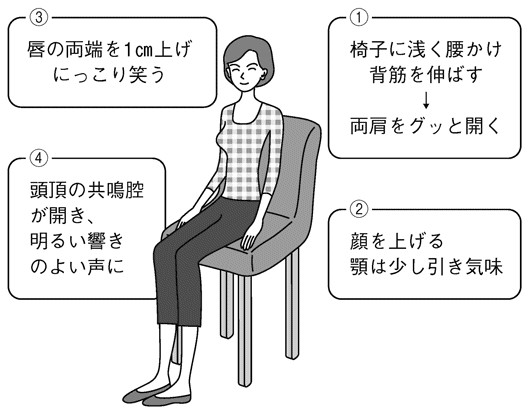
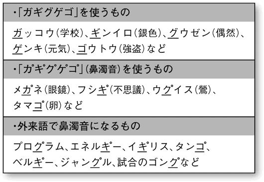

| プロアナウンサーの「伝える技術」 (PHP新書) | |
| 石川顕 | |
| PHP研究所 (2011) | |
プロアナウンサーの「伝える技術」
石川 顕
はじめに
いまでも忘れない、小学三年生のときのこと。国語の時間に先生が、「石川くんは朗読がうまいねえ、アナウンサーになれるね」と褒めてくださったことがあります。「豚もおだてりゃ木に登る」とはよく言ったもの。このひと言で私は、中学・高校と弁論部の盛んな鎌倉学園に進学、大学は「放送研究会ってところに入るとアナウンサーになりやすいらしい」と聞きつけ、早稲田大学に入りました。そしてその後、当時、東京地区ではいちばんのあこがれの的だったＴＢＳに入社する幸運に恵まれることになったのです。
私が入社した一九六四年の期は、アナウンサーの卵を入社直前から徹底的に教育したらどのような効果が期待できるかを知るテストケースとして、長期間、特別な研修が行われました。
入社が決まってすぐの大学四年の七月一日より、平日月曜から金曜、さらに土曜は「半ドン」と、早くもビジネスマンと同じ勤務時間帯の研修がスタート。夏休みが終わったあとも、月・水・金の週三日ペースの研修が入社直前まで続いたのです。文字どおり修業でした。
最近のアナウンサーは、入社後にせいぜい三カ月ほどの研修を受け、ときにはそれから一カ月も経たないうちにテレビやラジオに出演させられることがあります。しかし私は、こうして入社前の長い期間、基本から徹底的にアナウンサー教育を叩き込んでもらえたのですから、いまでもありがたく思っています。
何より恵まれていたと思うのは、そのときの講師陣です。話術ならば、弁士で漫談家の徳川夢声さん、アクセントなど日本語の話し方の基礎については、言語学者の金田一京助さん、歌謡曲については、作曲家の渡久地政信さんや吉田正さん、スポーツについては、読売巨人軍の監督を務められた水原茂さん、政治のことなら細川隆元さん、といった具合に、当時、各分野で超一流と言われた方々の話を、まるで大学の講義のように聴講できたのです。この実験的な研修は私たちの期のみで終わりましたが、のちのちまでの財産としてほんとうに幸運な勉強をさせてもらったと思います。
入社後は、希望どおりスポーツ担当に任じられたのですが、いざ現場に入ると、スポーツアナウンサーとはなかなかに一筋縄ではいかない職種だと痛感したものです。なぜならば、その場で展開されるプレーに目を配りながら、自分なりの判断を加えて、瞬時に言葉にして伝えなければならないからです。しかもそのためには、話術はもとより、そのスポーツ自体や選手たちに関する知識や情報が相当量ないとできません。他人が書いてくれたニュース原稿を読むのとはわけが違うのです。
スポーツアナウンサーの道を究めるには、かなりの努力を要することをすぐに悟りましたが、いまから思えば、その努力や経験のすべてが「伝えるプロ」へとつながる遠いようで近い最良の道でもあったのです。
ちなみに、日本テレビでキックボクシングの中継をしていた徳光和夫さん、テレビ朝日でプロレスの実況をしていた古舘伊知郎さん、文化放送の野球アナウンサーだったみのもんたさん、ＮＨＫの草野仁さん、大塚範一さんなど、いまでは幅広い分野で活躍されている方々は、みなさんスポーツアナウンサーのご出身です。
昨今、ビジネスの現場では、かつての学歴信仰は成果主義に取って代わって、いかにインパクトのある仕事をするか、それを認めてもらうために、どれほど自分をアピールできるか、そして、いかに聞き手を惹きつけるプレゼンテーションができるかなどで、その人間が何者なのかを判断される時代です。話がしっかりしている人は有能であると見られ、よい仕事を与えられ、成果をあげつづけていくと、やがて名実ともに有能になっていく――こうした好循環を、私も実際に現場でよく見てきました。
よく言われることですが、人前で話すときには、どれだけ多くの物事を知っているかも大切ですが、それ以上に「いかに相手が理解できるように伝えるか」のほうが、はるかに重要です。それは自分自身をどう表現できるか、ひいては、どういう人間として評価されるかに直結します。
本書では、この「人前で話す」ことを念頭に置いて、プロスポーツアナウンサーの「伝える技術」について、すぐにみなさんも実践できるようなテクニックやコツを紹介したいと思います。ちょっとした声の出し方、〝間〟のとり方一つで、聞き手の頭と心を惹きつけることができるのです。今日からでも遅くはありません。みなさんの自己アピール力を磨くうえでも役立つでしょう。
「いい花を咲かせようと思うなら、根っこをしっかり大地に張ること」という格言がありますが、「伝える技術」が日々の生活のなかで育める、プロの根っこの張り方をぜひ参考にしていただければ幸いです。
目次
編集協力――松田陽子
赤木ひろこ
――両肩を開き、口端を一センチアップ
アナウンサーになって最初に教育されるのは、何をおいても「姿勢」です。「姿の勢い」と書くくらいですから、とても大切だということで徹底的に教えられました。このことだけでもアナウンサーになってよかったと私は思っています。
では、具体的にどうするか。
まず、椅子に浅く腰かけて、背骨をピーンと伸ばします。
次に、ここがポイントなのですが、両肩をグッと開きます。「肩を開く」とは、肩をうしろに引く感じ。肩甲骨から天使が翼をパッと開くようなイメージです。
そして、顔を上げる。その際、上げすぎないように顎を少し引きます。するとどうしても、表情が硬くなってしまいがちです。
そこで肩の力を抜くために、唇の両端を一センチ上げて、にっこり笑ってください。一センチ上げろと言われても、せいぜい五ミリ程度しか上がらないものですが、そこを頑張って、グッと一センチ上げてみましょう。
すると、自然といい声が出るのです。
といいますのは、人間には、顔だけでも五〇種類以上の筋肉があるそうですが、笑顔になって顔の筋肉が上がると、骨格もそれにつられて上がります。すると頭頂にある共鳴腔（音の響く箇所）が開き、ツヤのある、まろやかな響きのいい声になるのです。人体の共鳴腔には鼻腔や胸腔など複数あるのですが、背筋をまっすぐ伸ばすことで、これらの共鳴腔が開き、上半身全体が「共鳴箱」になります。

私はこれを入社時の研修をヒントに実践してみたのですが、のちにラジオ番組のインタビューで骨格を研究している大学の先生に確認したところ、「そのとおり。そこまで知っているアナウンサーは、まずいないでしょうね」と褒めてくださいました。
このように背筋を伸ばした姿勢を保っていると、それだけで身体の中の赤い筋肉が一生懸命に働いてくれます。ヒトの筋肉（骨格筋）には赤い筋肉（赤筋）と白い筋肉（白筋）があって、赤い筋肉が働くと脂肪を燃焼してくれる――そう、太らないのです。
昨今では、ダイエットのためなら、いくらでも自己投資を惜しまない女性も多いそうですが、このように正しい姿勢を維持して座っているだけで、脂肪が燃焼し、一日六五〇〇歩ウォーキングしたのとほぼ同じカロリーが消費されるそうです。
私は、入社時に会社につくってもらった背広をいまでも着られるほど、五十年近く体型が変わっていません。それもこの「姿勢」のおかげだと思っています。
いい声を出す基本は「姿勢」です。背筋を伸ばし、肩甲骨から天使が翼を広げるイメージで両肩を開きます。あとは口の両端を一センチ上げてにっこり笑えば完璧。
――いい声を出す姿勢は太らない、ボケない、健康になる
いい姿勢、いい声で話す姿には、その人の品格、そして知性も感じられますよね。仕事もできそう、信頼できそう、経済力もありそうだ、とおのずと見られるわけです。さらに、口端一センチアップのにっこり笑顔で、温かみもプラスされます。何よりも明るい印象を聞き手に与えます。スポーツの世界でも、暗い選手は一流になれません。ましてや雰囲気の暗いチームが優勝した話など聞いたこともありません。
コミュニケーションの主役が「言葉」ではないという調査結果は、みなさんもご存じなのではないでしょうか。相手に好感をもたれるか否かの第一印象を決めるのは、見た目や表情などの視覚情報が五五パーセントを占め、声のトーンや話し方などの聴覚情報が三八パーセント、話の内容は七パーセントにすぎないというのです。
ですから姿勢や表情、声は、日常の人間関係、とくに初対面の人と良好なコミュニケーション関係を築くにあたり、真っ先に相手に好印象を与える手段として基本中の基本です。いい声を出す方法を学んだことは、プロアナウンサーの技術の一つとしてだけでなく、人生のあらゆる場面で非常にプラスになりました。いつでもニッコリ、ニッコリでシコリは残りません。いいことがあるから笑うのではなく、笑うからいいことがたくさんあるのです。
ところで私は、世界でもトップクラスのスポーツトレーナーの方々にも取材をすることが多いのですが、そこで知って驚いたのが、人間一人あたりの血管の総延長は、毛細血管をすべて足すと、なんと一〇万キロ、地球二周半にも及ぶそうです。その血管に血を送っているのが、小さな心臓。その心臓を鍛えるために、トレーナーからアドバイスされたのが「歩きなさい」ということでした。
声をよくするためには姿勢が大事。そのためには身体が丈夫でなければいけない。というわけで、言われたとおり、よく歩きましたよ。「足裏は第二の心臓」と言われますが、ポンプ役となって血液を押し上げる二本の足が元気ならば、まさに医者いらず。たしかに健康になりました。
私は入社以来、病気で会社を休んだことは一度もありません。腎臓結石の手術をした日でも会社に行きました。腎臓結石は、本番中にトイレの我慢を強いられるスポーツアナウンサーの職業病で、私は五、六回ほど手術をしましたが、それでも会社は休みませんでした。
歩き方の基本は、いい声を出すための姿勢をつねに保つことです。前述したように、背筋を伸ばし、肩甲骨のうしろに天使が翼をパッと広げるようなイメージで両肩を開きます。次に、頭のてっぺんからピーンと一本の糸が天高くまっすぐ伸びていて、それに吊り下げられる操り人形になった気分で歩きます。女性はファッションモデルが歩くように、一本の線の上を、片足の爪先にもう片方の足のかかとがつくような感じで交互に歩を進めましょう。男性ならば、二〇センチ幅の線をイメージして、その両端を踏むようにです。
このように歩く習慣を身につければ、いつしかいい声が出るようになるだけでなく、太らない、ボケない、肌がツヤツヤになる、年をとってもＯ脚にならない、なおかつ内臓が丈夫になる――健康・美容にいいことづくめ。これに笑顔が加われば、「幸せホルモン」と呼ばれるセロトニンが脳内で大放出されて、ストレスが驚異的に減少するそうです。
私の父にもこれをすすめたところ、いつもいい姿勢で、よく歩いていました。百五歳まで長生きし、いまどきめずらしく自宅で大往生。亡くなる直前まで私より食欲旺盛だったのは、おそらくこのおかげだと思っています。
「いい声を出す」ための体力づくりの基本は「いい姿勢で歩くこと」。太らない、ボケない、しみができない、肌がきれいになるなど健康・美容にも効果てきめんです。
――聞き取りやすい声を発する練習法
あなたが話をしているとき、相手から「え、いま何て言ったの？」と聞き返されることはありませんか。もし頻繁に聞き返されるようなら要注意です。
言葉を正しく伝えるためには、はっきり明快に発音しなくてはなりません。いわゆる滑舌の悪い声というのは、口や舌の動きが小さいために、聞き取りにくい声になってしまうのです。
そこで、滑舌よく、聞き取りやすい声を発するために、アイウエオの母音とカ行・サ行などの子音の発声や早口言葉の練習をすることで、口や舌の動きを鍛える必要があります。
なかでも、アナウンサーや舞台役者がよく行うのが「アエイウエオアオ」という母音の練習です。母音を正しく発声できない新人アナウンサーは、一週間以上かけて毎日、徹底的に教え込まれます。母音は発声の基本で、いちばん大事だからです。
顔の五〇の筋肉をすべて使い、口も張り裂けそうなほど大きく開けて、「アエイウエオアオ」と、これでもかというくらい動かして発声してみてください。まさに顔全体を使ったストレッチです。車の中でもトイレでも、声を出さずに口を動かすだけでもかまいません。すると滑舌がよくなるだけでなく、アナウンサーなら、テレビカメラに映ったときの顔が、とてもすっきりした、いい顔になるのです。
これをある映画女優の方に話したところ、さすが女優さんはみな似たようなストレッチをひそかに行っているらしいですね。本番前、「さあ、スタジオに行こう」という際、鏡に向かって顔のストレッチをするそうです。いつまでも引き締まった若々しい顔つきでいられる秘訣でもあるのでしょう。
スポーツ選手も、一流になればなるほど全身のストレッチを欠かしません。イチロー選手も、石川遼選手もたいへん熱心ですよね。これは血流をよくするだけでなく、モチベーションを高めるためでもあります。
元プロボクサーでＷＢＡ世界ジュニアフライ級王者の具志堅用高さんは、現役当時、世界タイトルマッチに挑む半年前から三カ月前、一カ月前、一週間前としだいに顔つきが驚くほど違っていました。「さあ、試合だぞ、試合だぞ」とモチベーションを徐々に高めて、いざ試合に挑んでいたのでしょう。
アナウンサーのコンディションづくりも、スポーツ選手と同じ。大げさにいえば、アナウンサーは毎日が本番で、真剣勝負の試合をしているようなものです。ですからストレッチを日頃行っているかいないかで、アナウンサーも一流と二流との差ができてしまうと思います。
メジャーリーグで活躍する松井秀喜選手にインタビューした際、彼が「物事には計画、準備、実行、反省とあるけど、ぼくがいちばん重視しているのは準備です。準備だけは自分のペースでいくらでも時間をかけてやることができます。いい準備をしたときは、ちゃんといい結果が出るんですよ」と言っていましたが、まったく同感です。滑舌というのは、この準備、ストレッチをいかにしっかり行っているかどうかなのです。準備九割、本番一割。これを逆だと勘違いしているのがアマチュアなのであって、九割の準備でおおよそ勝負は決まってしまうものなのです。
かつて私は、早朝五時のニュースを読まなければならないのに不覚にも寝過ごしてしまって、わずか五分前に起きて本番に臨んだことがあります。もちろんストレッチなどやっていませんから、録音した自分の声をあとで聞き返してみると、それはもう恥ずかしかったですね。
以来、声を出す前の準備はとても大事にしています。とくにボクシングの実況など、いつもよりもかなり早口でしゃべらなければならないときは、朝からガムをかむようにします。これも顔のストレッチとなって、筋肉をやわらかくするのです。ただ、試合会場でガムをかんで取材するのは不謹慎だと思われるので、なるべく口を動かさないように、そうはいいつつも舌を使うようにしてかんでいました。
それから一日一分、声を出して新聞を読んでいました。脳のストレッチと老化防止にも役立ちますから、これもおすすめです。脳細胞の数は一二〇億とも一四〇億とも言われているそうですが、発達するのは二十歳までで、あとは減る一方。多い人は一日二二万個も死滅するということですからね。
「聞き取りやすい声」の基本は、正しい母音の発声です。口を大きく開け、顔の筋肉全体を使う気持ちで「アエイウエオアオ」と発声してみましょう。
――アクセント一つで大きなミス
ところで、滑舌やアクセントが悪かったがために、次のようなとんでもない間違いが起きてしまったことがあったそうです。これは、読売新聞の本社と奈良支局の原稿のやりとりでの話です。
私が放送局に入った初期もそうでしたが、新聞記者はむかし、原稿を電話で社に伝えていました。ある日、奈良支局の記者から「宮様が東大寺で大きな亀をご覧に」という見出しが本社に電話で伝えられました。本社ではだれも奈良の東大寺に大きな亀がいるとは聞いたことがなかったので、奈良支局に問い合わせの電話を入れました。以下はそのやりとりです。
本社「あのう、大きな亀でいいですか」
支局「はい、大きな鐘です」
本社「鶴亀の亀ですね」
支局「はい、釣鐘の鐘です」
本社「確認ですが、動物の亀ですね」
支局「はい、大仏の鐘です」
ミスはこうして起き、「大きな鐘をご覧に」のはずが「大きな亀をご覧に」という見出しになってしまったのです。奈良支局の記者は「カネ」（鐘）を「カネ」と語尾を上げて言うべきところを、「カネ」と下げて発音し、さらに滑舌の悪さも加わって、相手には「カメ」（亀）と聞こえてしまった。アクセントの大切さに思いがいたらなかったために、確認の電話でも「カメ」が「カネ」に、「ツルカメ」が「ツリガネ」、「ドウブツ」が「ダイブツ」に聞こえてしまったのでしょう。笑い話のようですが、実話です。
日本語のアクセントは高低変化します。アクセントの間違いは、自分ではなかなか気づかないもの。指摘されたら、その場でしっかり確認するように心がけましょう。
――言葉を心地よく伝える鼻濁音
鼻濁音（鼻に息を通して発する音）とは、通常の「ガギグゲゴ」という濁音を「ンガ、ンギ、ング、ンゲ、ンゴ」と発音します。このように「ン」を前につけると簡単にできるテクニックです（ここでは鼻濁音を「」と便宜的に表記します）。
たとえば「音楽」は「オンガク」ではなく、「オンク」。こうすると、汚い濁音を耳に心地よい音に変えてくれます。同じく「メネ」（眼鏡）、「タマ」（卵）というように、原則としてガ行音が単語の中間（語中）か終わり（語尾）にある場合は鼻濁音になります。「私の母」のように、助詞の場合も鼻濁音です。
一方、「ガッコウ」（学校）や「ギンイロ」（銀色）のように、語頭は鼻濁音になることはありません。「小学校」や「中学校」となると、先ほど説明したように「ガ」の音が語中に入りますから「ショウッコウ」「チュウッコウ」と鼻濁音になるのです。
ところが「高等学校」や「地方銀行」の場合には、「コウトウッコウ」や「チホウンコウ」とは発音しません。複合語は鼻濁音にしなければならないと言われますが、例外もあるのです。
また、外来語は原則ほとんど鼻濁音にならないのですが、おもしろいことに、ほぼ日本語化している単語、たとえば「プロラム」「エネルー」「イリス」「タン」「ベルー」「ジャンル」など、鼻濁音になる場合もあります。

昨今では、鼻濁音を使わなくなる傾向もありますが、鼻濁音を話せるに越したことはないですね。きれいですし、まろやかに聞こえます。鼻濁音は、言葉を美しく相手に伝えてくれるものです。
私がＴＢＳの中堅アナウンサーだったころ、演歌歌手の都はるみさんがレコード大賞を受賞した『北の宿から』を歌っている模様をアナウンス部のみんなで聞いていて、全員が思わず苦笑いしたことがありました。サビにあたる「♪女～心の～」の「おんなごころ」という部分を、「コロ」と鼻濁音を使わず、思いっきり「ゴコロ」と歌っていたのです。
あのときほど、濁音と鼻濁音の違いに気づかされたことはなかったですね。さすがに都はるみさんは、その後しばらく経ってから鼻濁音に直して録音されています。言葉を美しく伝えるためには、鼻濁音はやはり大事だと痛感したものです。
鼻濁音は「ガギグゲゴ」を「ンガ、ンギ、ング、ンゲ、ンゴ」と発音することで、耳障りな濁音を心地よい音に変え、言葉を美しく伝えてくれます。
――カラオケのすすめ
日本プロ野球で前人未踏の通算四〇〇勝を記録した金田正一さんが、監督時代、とにかく「走れ、走れ、ランニングだ」とよく言っていたことを思い出します。金田さんにかぎらず、スポーツ選手にとっての基本はランニングであるとよく言いますよね。同じように、アナウンサーが声を鍛えるためには、何はともあれ声を出すことです。
中学・高校の弁論部で学んだのも、とにかく大きな声を出すことでした。教室の窓を開けて、鎌倉学園伝統の「われわれは、われわれは、われわれは!」と三段階で徐々に声を大きくしていく練習を、何時間もさせられるのです。おかげで喉が強くなりました。どんなに長い試合を実況しても声はかれませんし、ひっくり返りません。
けれども、たいていの人は声帯を鍛える訓練など行ってきてはいないでしょう。そういう方は、たとえば車を一人で運転しているときに、なるべく大声を出してみてください。ＢＧＭに合わせて歌うのもいい。常日頃から喉を使うことが大切なのです。
「声が小さい」と人に言われる方はみなさん、最初の第一声が小さすぎて元気がないのです。大きめの声でスタートすると、その勢いにつられて自然に大きな声が出てくるものです。
カラオケもどうぞ歌ってください。私はカラオケによく行きます。自分でもギネス級だと思うのですが、休みなしで七時間歌いつづけても声がかれませんでした。
ただし、私は長年、仕事で声帯を鍛えてきたからであって、みなさんの歌いすぎは禁物です。また、カラオケでお酒を飲んだり、タバコを吸いながら歌うと声帯を傷めます。数曲歌ったら水で喉を潤し、洗面所でうがいをするなど、喉の調子に気をつけながら歌うようにしましょう。
日頃から声を出すように努めていると、喉も声帯もおのずと鍛えられます。歩かないと足の筋肉が衰えてしまうように、人間の身体は適度に使っていないとダメなのです。たとえば職場の都合でアナウンサーがしゃべりの仕事から離れ、デスク担当に異動する。あるいは配置転換で編成へ、営業へ、総務へ異動になる。すると不思議なもので、三カ月もすると声がざらついて、ツヤのない声になっているのにビックリします。
舌や喉の筋肉は、三十代の後半から老化が始まるそうです。そうなると会議や商談でも、「え？ もう一回お願いします」と聞き返されることが多くなり、説得力も低下します。よく聞こえないからつまらない、と印象まで薄くなってしまい、数々のデメリットが生じてきます。ですから、声を出して喉の筋肉を維持することが必要なのです。
ところで、私はタバコを平気で吸います。ただし、一日三本以上は吸わないようにしています。お酒も飲みます。こちらも飲みすぎないようにしています。
みなさんも経験があると思いますが、お酒を飲みすぎると、翌日は風邪をひいたような鼻声になりますね。タバコの吸いすぎは喉を乾燥させます。潤っていない喉から、潤いのある声は出せません。かといって飲み物で潤そうとすると、今度はトイレに行きたくなってしまい、実況アナウンサーとしては困ります。
では、どうするのか。放送前になるべくビタミンＣを摂取するようにレモンのアメをなめます。すると喉が渇きません。「あがり症で喉がカラカラに渇いてしまう」という人には、オレンジジュースをおすすめします。柑桔類はいいですよ。いい声を出したいので、私もいろいろと調べ、試してみました。黒豆の煮汁も喉にいいと聞き、実際に試みましたが、たしかに調子がよくなるようです。
「声が小さい」「よく聞き取れない」と言われる方は、日頃から声を出す習慣をつけましょう。カラオケもおすすめです。ただし、歌いすぎて喉を傷めないように。
――うがいは喉を鍛える
「インフルの ニュースアナウンサー 鼻声だ」という、新聞の読者がつくった川柳を見たことがありますが、アナウンサーたるもの風邪をひいては話になりません。仲間うちでも、風邪をひくと自己管理がなっていないということで、プロとして軽蔑されます。
風邪をひかないことに関しては、同業者のなかでも私はトップクラスだと自負しています。秘訣はごく当たり前のことで、毎日のうがいを欠かさないこと。うがいは風邪予防だけでなく喉の鍛錬にも効果的で、喉の粘膜や筋肉、舌の筋肉を鍛えることができます。
コツは、コップの水でうがいをするのではなく、洗面所で顔を洗うときのように、水道の蛇口から手のひらで水をすくって口にふくみ、顔を上げてブクブクブク......と。冬場は乾燥しますから、とくに一日一〇回ほど入念にうがいをします。
このとき、手のひらに口を近づけていく体勢をとると、自然と腹式呼吸になるため、お腹の筋肉も鍛えられると教えられました。発声の基本である腹式呼吸は、息を吸うときに胸ではなくお腹を膨らませる呼吸法です。まず五秒ほどかけてゆっくり鼻から息を吸い、お腹がゆっくり膨らんだら五秒ほど息を止めます。それから十秒ほどかけてゆっくり口から息を吐いてみてください。お腹に手を当てて確認しながら行うとよいでしょう。
一流のボクシングのトレーナーは、ゴングとゴングのあいだの休憩の時間に、この腹式呼吸を使って、吐くときは吸う時間の二倍から三倍長く「ふーーっ」とボクサーに息を吐かせます。これは精神を落ち着かせ、疲労を回復させる、いちばん即効的な方法なので、みなさんの実生活でもぜひおすすめします。
また私は、外から帰ったら手だけでなく、必ず顔も洗います。なぜならウイルスやばい菌は手と同様、目や鼻からも当然入ってくるわけです。女性は帰宅したら、なるべく早めに化粧を落として顔を洗いましょう。これだけでも風邪はかなり防ぐことができるはずです。
絶対に風邪をひいてはいけないときのプロアナウンサーの秘伝を一つ。洗面器に水を満たして顔をつけ、鼻から水を吸い込みます。そしてゆっくりと口から吐き出します。慣れるとなんでもありません。私が風邪をひかなかったのは、これらのことを毎日欠かさなかったからかもしれません。
メジャーリーガーのイチロー選手が「小さなことの積み重ねが、とんでもないところへ連れていってくれる。これがぼくの二〇〇本安打が十年も続いた、たった一つの秘密ですよ」と言っていましたよね。
やはり「継続は力なり」。毎日だれよりも一生懸命に努力して、だれよりも飽きずに続けること、それがスポーツ選手であれ、ほかのどんな職業であれ一流と二流との差を決めるのだと思います。
うがいは喉の粘膜や筋肉を鍛えます。コップを使わず、腰をかがめて蛇口から手で水をすくい、口を近づけると、自然と腹式呼吸になり腹筋も鍛えられます。
――早口で知的に見えるのは久米宏さんくらいのもの
お寿司屋の板前さんと話していたときのことです。
「私たちは、今日はこれがいい! というネタが二種類あったら御の字ですよ。早くお客さんが来ないかなあとワクワクします。今日は五種類もあるから、もう最高です。難しいのは、何もないときにどういうふうにお客さんにおいしく食べていただくか。これがプロの技ですね」
ああ、スポーツアナウンサーも同じだな、と思いました。
たとえつまらない試合でも、どのくらいおもしろく実況できるか。とっておきのネタがあるときはいいですが、そうではないときでも、いかに視聴者に興味をもってもらえるように聞かせるか。ここが勝負の分かれ目です。そこで実力を発揮するのが、いわゆる話術であり、テクニックなわけです。
まず大切なポイントは、話すスピードです。
話し手は「自分の知っていること」を話すので、たいてい早めになりがちです。逆に聞き手は「知らないこと」を聞かされるわけで、当然、理解のスピードに差が出ます。とくにプレゼンテーションのように、話し手が一方的に話す機会では、なおさら多くの聞き手は早いと感じてしまうものなのです。
話のうまい人は、たいていゆったりとした話し方です。せかせかした話し方や早くしゃべろうとする人に、話の名手はまずいないと思っていいでしょう。
ゴルフのスイングでも、余裕のない選手ほど池越えのショートホールなどでは落ち着きがなくて、早く打ちたがる。スイング自体も早くなります。下手な人にかぎって「早く打ちたい」「このイヤな状況から早く逃げ出したい」。それで早くなるのです。
スピーチもまったく同じです。「プレッシャーだなあ」「しゃべるのイヤだなあ」と、その場から逃げたい気持ちから早くなりがちです。早くてよいことは一つもありません。何よりまず意味が通じません。発音が甘くなります。とちりやすくなります。
ゆっくりしゃべると、発音が乱れません。さらに内容を理解しながらしゃべることができ、お客さんがこの話に関心をもっているかどうか、反応を見ながら話を軌道修正することもできます。
相手にうまく伝えるためには、まずは自分自身が話す内容をしっかり理解しなければなりません。話のうまい人は、文の意味を把握し、文節の切れ目を無理なくきちんとつなげて、強調する部分ではしっかりと〝間〟をとる。この〝間〟のとり方が上手なのです。
同じ原稿量でもベテランアナウンサーが読むとゆっくりと落ち着いて聞こえ、若いアナウンサーだと早くせわしなく聞こえるのは、この〝間〟のとり方の違いなのです。しかも早口で読んでいるアナウンサーも、ストップウオッチで計ってみると、不思議なもので意外と時間がかかっている。おもしろいですよね。
話術は「間術」です。〝間〟のとれない話し手を、プロは「間抜け」と言います（笑）。逆に〝間〟の使い方一つで「魔術」にもなります。「間」がある「人」こそ「人間」と言うんですね（笑）。
プレゼンテーションなどビジネスの場面では、スピードのあるテンポのよい話し方が知的に聞こえる場合もありますが、たいていの人は、ゆっくり〝間〟をとって話すほうが、落ち着いて自信があるように見えます。緊張しやすい方は、どうしてもスピードが増していく傾向にあるので、ゆっくり話そうと意識してちょうどよくなるかもしれませんね。
ＴＢＳで同僚だった久米宏さんは、一分間になんと七六〇字から八〇〇字をしゃべっています。これはスポーツアナウンサー並みです。けれども彼は、完璧に文章の内容を理解しているから、決して長く感じさせないですし、きちんと伝わってきます。あれを素人がやったら、何を言っているのかわかりません。
ベテランのアナウンサーの話が聞きやすいのは、ゆっくり話すからです。一分間にせいぜい四〇〇字から四五〇字でしょう。もちろん〝間〟のとり方も巧みです。キャリアが活きているのです。入社二、三年目のアナウンサーがニュースを読んでいるのを聞くと「勘弁してよ」というのが正直な気持ちです。
とかく話し手は、早くしゃべりがちです。人前で緊張しやすい人は、とくに「ゆっくり話す」こと。発音が乱れず、落ち着いて自信があるように聞こえます。
――句読点「、」「。」にも大中小のサイズがある
学生時代に「この先生の授業は眠くなるなあ」という場合、たいてい〝間〟をとらない、メリハリがない、ずっと同じ一本調子で話す先生だったのではないでしょうか。先生自身はもう慣れているから次から次へと言葉が立て板に水のごとくスラスラ出てくる。これがじつに耳心地がよくてつい眠くなってしまう......。これではダメですよね。
ストレートがどんなに速いピッチャーだって、直球ばかり投げていたら打たれてしまいます。ストレートのあとは変化球を投げる。チェンジ・オブ・ペース。これも大事なことです。
同じ句読点「、」「。」でも、それぞれ大中小のサイズがあるとイメージしてください。同じ句点「。」でも、短い〝間〟の小さなマルもあれば、「......（三秒くらい）」の〝間〟をとらなければならないような大きなマルのときもあります。同じ読点「、」でも、「......（二秒くらい）」の〝間〟もあれば、ポンポンと短い〝間〟もある。これらを話の内容に応じてうまく使い分けられる人は、しゃべりの名手でしょう。
ところが、私も大学で教えていてよくわかるのですが、みなさん意識をしないと、句読点すべてがつねに同じ〝間〟になっているのです。
そこで私は、よく学生たちに、具体的な例として芭蕉の俳句を次のように詠んでみせます。
古池や......（三秒くらい〝間〟をとって）蛙飛び込む（二秒の〝間〟）水の音
「古池や」のあとで〝間〟をしっかりとると、聞き手はこのあいだに、古い静かな池を頭の中で想像し、次に何が始まるのだろう？ と思ってくれます。芭蕉と読み手のあいだにコミュニケーションが築かれるのです。野球でいうとキャッチボール。次はどんなボールが来るのだろう？ と読み手が積極的に俳句に参加してきます。
すると芭蕉は、池の中に飛び込む蛙の姿を見せてくれるわけです。そして、蛙が飛び込んだあとの池には、ただ静かに波紋が広がっていく......。芭蕉と読み手の心が交流して一体化し、感動を共有できるのですね。
これはスピーチも同じです。あるいはプレゼンテーションでも感動を共有できます。頭のいい人がどんなによい資料を集め、話題が豊富でも、この〝間〟を上手にとらなければ、半分も伝わらない。もったいないことです。プロのナレーションをよく聞いてみると、大切な言葉が来る前には必ず少し〝間〟をとっています。
たとえばプレゼンテーションでは、「つまり」や「ところで」など、接続詞のあとに〝間〟をとると、聞き手もそこで頭を切り替えて、次の展開を追いやすくなります。
とはいえ、いざ自分が話し手の立場になると、どうしても〝間〟を怖がってしまいます。少しでも〝間〟が空くと「何か話さなくてはいけない」と焦ってしまうのです。
では、どうするか。スピーチの原稿があれば、ここぞという〝間〟をとりたい句読点には大きなマル印を書き込んでみてください。そして、声に出して練習してみるのです。
五十年近くアナウンサー経験をもつプロの私でも、ここで〝間〟をとらなければという箇所には、赤鉛筆で大きなマル印を書き込みます。これをすることで、自分のしゃべりを効果的に演出できるのでおすすめです。
ちなみにアナウンサーが大事なところを強調する方法には、三つあります。
「これから消費者問題懇談会の話をします」という文を例にとってみましょう。
「これから......（二秒くらいの〝間〟）......（静かに）消費者問題懇談会の話をします」
「これから、（『消費者問題』を大きくはっきりと）消費者問題懇談会の話をします」
 （ゆっくりと穏やかに）「これから、消費者問題、懇談会の、話をします」
（ゆっくりと穏やかに）「これから、消費者問題、懇談会の、話をします」
〝間〟をとる、強弱をつける、チェンジ・オブ・ペースですね。
また、話し手が内容を理解しているかいないかは、読点の位置のとり方一つにも表れます。たとえば次の文は、読点の位置によって二通りの解釈ができます。
「新人議員のＡさんとＢさんはともに強烈な個性と抜群の存在感があります」
ａ「新人議員の、ＡさんとＢさんは、......」なら二人とも新人議員
ｂ「新人議員のＡさんと、Ｂさんは、......」ならＡさんだけが新人議員
このように読点の〝間〟のとり方によって解釈が違ってくるのですが、ｂの場合、なかなか読点の〝間〟のとり方だけで聞き手にａとの意味の違いを伝えるのは困難です。ｂの場合は、できればＢさんの前にもＡさんの「新人議員の」に対応するなんらかの修飾語、たとえば「ベテラン議員の」などを入れると明確でわかりやすくなりますね。
一本調子のしゃべりは聞き手を退屈させます。句読点「、」「。」のそれぞれ異なる長さの〝間〟をとりましょう。声に強弱をつけくわえれば申し分ありません。
――大胆な間合いと小声スタート
前述の「古池や」のあとの〝間〟のとり方については、入社時の研修で弁士の徳川夢声さんが実演してくれました。けれども、まだ二十二歳で駆け出しのアナウンサーだった私には、よく理解できませんでした。
「古池や」のあとに、自分が思う二倍から三倍くらいの〝間〟をとってもおかしくないのです。なぜそれができなかったかというと、アナウンサーにとっていちばん恐ろしいのが「デッド」という無言の空白時間だからです。マイクを前にして「次に何を話せばいいんだ。言葉が出てこない。どうしよう」。アナウンサーになってから十年ものあいだ、ひと月に一回はこのような悪夢にうなされたものです。同業者に聞くと、みな同じ経験をもっていました。
ほんとうだったら、王貞治さんの記念すべきホームランが出たとき、「王、出ました、○○○号......」と口にしたあと、そのまま黙ってしまったほうがむしろよかったのですが、それが怖くてしゃべりつづけた自分は、若かったなあ、度胸がなかったなあと思います。これがわかるようになるのは五十歳近くになってからでした。だからこそいま、こうしてみなさんにおすすめしているわけです。
たとえばプレゼンテーションの際、「さて、みなさん、次に絶対これだけは聞いていただきたいことがございます」と言ったあと、大胆に五、六秒の〝間〟をとってみてください。そうすると「え？ 何だ？」と聞き手は驚き、次に何が来るかと身構えます。
テクニックとしてはそのあと、むしろ小さな声で話しはじめます。「（大きくハキハキと）さて、その、問題ですけれども」ではなくて、「（静かに）さて、その問題ですが」と始めるのです。ここぞというときは、いつもより小さい声で話しはじめたほうが相手の関心を惹くことができるのです。
私がアナウンサーの修業時代に習ったのは、第一声は「元気よく大きな声で」ということでした。しかし、ベテランになって自分で気がついたことは、つねにそうあるべきとはかぎらない。挨拶などの第一声とは違って、相手に聞いてもらうためには「低い声」で話したほうが効果を発揮することもあるのです。いまのマイクは小さな声でも十分に音を拾ってくれますから、大声を出す必要はないのです。
私はこれを自分の講演でもよく試していますが、ほんとうにそのとおり。このテクニックを使い分けられるようになったら、かなりの上級者です。ただし、マイクがないときにはおすすめしません。声が聞こえず、かえって逆効果になってしまうので要注意です。
余談ですが、講演一回あたりのギャラが三〇〇万円ともウワサされる評論家の竹村健一さんが、あるとき、司会者に紹介されて壇上に上がってから、なんと二分間もいっさい口を開かず、会場がしーんとなったところでやおら第一声を放ったことがありました。たまげましたね。ほんとうにすごい技です。
いまから大切なことを伝えたい。そんなときには五、六秒の大胆な間合いをとって、次に小声でスタート。聞き手の意表を衝いて惹きつける上級テクニックです。
――小宮悦子さんの低い声のワケ
前述の久米宏さんと私は、二年間近くいっしょに『全国縦断 ひろし・あきらの朝ですよ～!』（ＴＢＳラジオ、一九七七～七八年）という朝の生番組を一日交代で担当していたのですが、あのころから彼のことは「こりゃすごいや、頭のいいやつだな」と思っていました。
のちに久米さんは『ニュースステーション』（テレビ朝日、一九八五～二〇〇四年）で、当時テレビ朝日のアナウンサーだった小宮悦子さんと組みました。じつはそのとき、彼は小宮さんに「えっちゃん、もっと低い声で、もっと低い声出して」と頼んでいたのです。だれかがアドバイスしたのか......いや、彼自身の考えでしょう。小宮さんがニュースを読む声は、当時の女性アナウンサーにしては、たいへん低かったですよね。
私は最初、「なぜ彼女は、つくった声でしゃべっているのだろう。（つくり声を続けると）ポリープができてしまうよ」と思ったものです。いつしか、あの低い声が彼女自身の地声になりました。とても聞きやすい声ですよね。落ち着いたトーンで、夜遅い時間帯にも適していましたし、信頼感を演出するうえで大成功でした。
女性のなかには、低い声にコンプレックスを抱いている人もいるようです。声が低いとかわいらしさや女性らしさに欠けると、マイナスにとらえているのでしょう。けれども落ち着いた低い声で話すのは、相手に大切なことをじっくり聞いてもらう一つのテクニックだと思います。ちなみに、アメリカのアナウンサーはどのような教育をされるか。やはり「低い声でしゃべりなさい」だそうです。もちろん信頼感を高めるためです。
落ち着いた低い声には安定感や説得力があり、相手に信頼感を与えます。大切な話をじっくり聞いてほしい、そんなときにはとくに効果的です。
――相手の瞳孔を開かせるアイコンタクト
アナウンサーになりたいと思うような人は、多かれ少なかれ自己顕示欲が旺盛で、またそうでなければならない商売なのですが、とはいえ、なかなか最初からは、やわらかな表情でテレビカメラを正視できないものです。照れてしまうのでしょう。そういう人が多いです。
けれどもアナウンサーたるもの、テレビカメラへの視線は絶対に外してはいけません。では、私たちプロアナウンサーはどう教育されるのか。
「レンズの向こうにいちばん好きな人を想定しなさい。好きな人がいない場合はお父さんやお母さん、兄弟なり姉妹なりをイメージしなさい」
人と話をする際に、アイコンタクトが重要であることは言うまでもありません。ましてや私たちアナウンサーは、人の目を見て話すことは不可欠ですから、インタビューなどでは必ず相手がいまどのような気持ちで、どのように反応してくれるかをつねに目で探ります。人の話は目で聞け、です。
そもそも視線を合わせてくれない相手に対しては、「あ、この人はおかしいな、アヤシイな。もしかしたら悪い人じゃないかな」と判断しがちです。なにしろ、人間の五体のなかでいちばんウソをつけないのが目だそうですから。心の状態をごまかせない唯一のパーツが目なのです。
人間はおもしろいことや興味があるとき、目の瞳孔が開くそうで、専門家にははっきりわかるのだそうです。私にはそこまでわかりませんが、瞳孔が開くのは、おそらくテレパシーのようにして相手に何かを伝えているのでしょう。「目は口ほどにものを言う」と言いますが、目が言葉以上に気持ちを伝える場合があるのは、そういうことかもしれません。
アイコンタクトによって、意思疎通ができていると感じたり、ときには愛情や親しみを感じたりすることもあります。会話の最中でもアイコンタクトがあれば、相手がきちんと聞いてくれていることがわかります。
視線を合わせようとしても、相手がこちらを見てくれないと、ボールを投げてもキャッチャーがよそ見をしてボールを捕ってくれないということですから、キャッチボールにならないのです。恥ずかしがり屋の人は、どうしても相手の目を見て会話をするのが無理であれば、鼻や口元などを見るように頑張ってみましょう。
大学で教えている学生にもアイコンタクトの重要性を強調するのですが、学生に教壇でフリートークやスピーチの練習をさせると、最初は八割近くが聞き手の目を見ることができません。教壇に立つと「見られている」と意識してしまい、いっぺんにあがってしまうのでしょう。
けれども、これでは視線をキョロキョロさせているように見えて、聞き手は落ち着かない印象を受けます。自信がなさそうにも見えてしまい、話の説得力に欠けます。また話し手が原稿に目を落として棒読みしていると、聞き手は話しかけられている気がしません。ゆっくり一人ひとりの顔を見て、アイコンタクトをとりながら自信をもって話してください。
人前では、一人ひとりの顔を見てアイコンタクトをとりながら、語りかけるように話しましょう。誠実で自信があり、落ち着いて見えるので、説得力もアップします。
――うなずいてくれる聞き手を探せ
おもしろい話があって、人間というのは「へぇー、ほぉー」とうなずいてもらうと、しゃべりの量が五〇～七〇パーセントも増えるというアメリカの心理学的な統計データがあります。
第１章で姿勢の話をしましたが、姿勢を正しくすると視野が広がります。目に入ってくる情報量が多い。すると「へぇー、ほぉー」とうなずいてくれる人が必ず目に入ります。そういう人を探して、その人に話しかけるようにすると、無意識のうちに勇気づけられ、しゃべる量が増えるわけです。好意をもたれていることが実感できて自信が湧いてきます。話し手と聞き手の関係が好転するのです。
スピーチやプレゼンテーションの際に、聞き手全員に対して均等にアイコンタクトを送るのはなかなか難しいので、まずは自分の話を好意的に聞いてくれる人を探すのです。とくにしゃべりに自信のない人は、まずは手っ取り早く、うなずいてくれる人を探しましょう。必ずいますから。
もしうなずいてくれる人がまったくいない場合は、適当な人を見つけて何回も視線をそこに向けてください。
私の経験からいうと、とくに女性は、アイコンタクトを送りながら話しかけると、自分に話しかけられているような感じがするのでしょう、最初はそうでなくても、しだいにうなずいてくれる人が多いです。女性はその点では優しいですね。
ちなみに「優」という字は、「憂」の横に「人」と書きます。自信がないという憂いを消してくれる優しい人になりたいものですね。
もちろん怖い顔をして話しかけてはダメです。笑顔で話しかければ、必ずうなずいてくれます。聞き手がうなずくと「あ、この人、私の話を聞いてくれている。拍手してくれる。賛同してくれているんだな。褒められているな」と自信につながっていきます。
人間は、「人に褒められたい、感謝されたい、役に立ちたい」もの。年をとると、これらの「三たい」がなおさら欲しくなるらしいのですが、「三たい」がいかに話し手を勇気づけてくれることか。私も身をもって実感しています。
人前で話すときに緊張するのは自信がないからです。自分の話にうなずいてくれる人に視線を向けながら話すと、おのずと自信が湧き、しゃべりの量が増えていきます。
――聞き上手は話し上手になれる
いくら「しゃべるのが商売」とはいえ、アナウンサーがプロデューサーやディレクターなどといっしょの会議で、とりわけよくしゃべるわけではありません。アナウンス部内の会議でも、喧々諤々、しゃべりが続くということもないです。
むしろ私の場合（若いときは違いましたが）、なるべくみんなの話を聞いて、最終的に議論の落としどころとしていちばん妥当な意見を述べる、いわば、おいしいところをもっていくタイプです。全員の意見に耳を傾け、最後にずばり自分の意見を述べることも、ときには自分の意見を効果的に「伝える」テクニックの一つだと思います。
ところで話を聞くといっても、ただ黙って聞いていればいいわけではありません。話し手からすれば、聞き手がどのように聞いているかがとても気になります。話し手のアイコンタクトと同様に、聞き手も大事なところでは相手の目をしっかり見ることが必要です。うなずきながら、ときには「へぇー、ほぉー」と相づちを打ち、内容に応じた合いの手を入れて、話し手をリードするのが上手な聞き方です。「しかし」よりも「なるほど」です。
また、相手の話を「聞く」という行為は、当然、今度は自分がそれを受けて「話す」という行為につながります。聞きっぱなしでは、相手とコミュニケーションをとったことにはなりません。
つまり、話を「聞く」というのは受け身的な行為に見えて、じつは、相手の話の核心を的確にとらえ、ふさわしい相づちや返答をして話し手と信頼感を築く積極的な行為なのです。これができたとき、たとえ言葉数が少なくても、あなたは相手にとても話し上手だという印象を与えます。聞き上手が話し上手になれるとはそういうことなのです。
私たちは二つの耳と一つの口をもっています。まずは相手の話を聞くことが自分が話すことよりも二倍も大切だと、謙虚に、そして積極的に人の話を聞きましょう。
そういえば、作家の山口洋子さんがかつて、経営していたクラブ「姫」が銀座でもっとも繁盛していたとき、「ウチのナンバー１はこの娘。お客様のお話を聞くのがいちばんうまいから」と言っていたのを思い出します。正直、絶世の美女とはいえませんでしたが、聞き上手はモテるのだなあと感心したものです。
相手の話の核心をとらえ、適切な相づちを打ち、話し手をリードするような聞き上手になったとき、しだいに周囲から話し上手と評価されるようになるでしょう。
――とちらないテクニックとは？
どんなアナウンサーも自分の好きな早口言葉をもっています。私の場合は「農商務省特許局」「日本銀行国庫局」「東京都特許許可局」。さらに、自分でつくった早口言葉があります。
忘れられぬことは、あなたとともに温かかったとろろ料理の麦とろと生まながつおを食べ、戸棚などの中のバナナなどの果物などとクロレラヤクルトを頂いたことです。
いまだに言いにくいので、暇なときに車内などで何回もくりかえしています。現役時代は毎日のように練習していました。なぜなのか。視聴者、聴取者のみなさんがアナウンサーのうまい下手の判断材料にしているトップは、残念ながら（笑）、とちりの回数なのです。
ある日、ニュースを聞いているときに、若いアナウンサーがどうしてもうまく言えず、思わず笑ってしまったのが「日韓問題懇談会」という単語でした。
「ニッカンモンダンコン、失礼しました。ニッカイモンダン、失礼しました。ニッカンモンダンコン、失礼しました。ニッカンモンダイコンダク、失礼しました......」
このように延々と奮闘しているのです。とちればとちるほど焦ってしまったのでしょう。
こういうときこそ〝間〟をとるのです。「日韓」で〝間〟をとれば「日韓、問題懇談会」と一発で言えます。あるいは「日韓問題、懇談会」。簡単なことなのです。プレゼンテーションでも、自分はこの単語が言いにくいと感じたら、思いきって単語を区切って〝間〟をとればいいのです。
むかしは映画館に行きますと、週ごとにニュース映画が流れました。そのパラマウントニュースのナレーション担当が竹脇昌作さんというアナウンサーで（俳優の竹脇無我さんのお父様ですが）、独特の一本調子で「アメリカの、アイゼン、ハワー、大統領、は、今日、午前、十時......」とニュースを読んでいました。
当時、週間ニュースの映像は、締め切りギリギリにアメリカから届き、翌々日には全国の映画館に流すという厳しいスケジュールで、真夜中に録音しなければなりませんでした。翻訳して原稿ができあがったら、これを一発で録音。とちったら、むかしは、最初から録りなおしです。さて、絶対とちらないためにはどうするか。
そこで、あの「アメリカの、アイゼン、ハワー、大統領、は、今日、午前、十時」と、ブツブツと語句を切る独特なアナウンスが生まれたのです。これで絶対にとちらない。
このしゃべり方は当時、モノマネの格好のネタになったものですが、モノマネする人も私たちも、なぜブツブツと言葉を切るのかまったくわかりませんでした。のちにアナウンサーの研修で、先輩から「いいか、おまえたち、絶対とちらない方法があるんだよ」と、この「ブツブツ切る」話し方を教えてもらってはじめて、その意味がわかったのです。いいことを教えてもらったと思いましたよ。
あるスポーツアナウンサーから「石川さん、とちらない方法を教えてください」と質問されたことがありました。「ニュースや実況にしても、石川さんはほんとうにとちりが少ない」と言うのです。そこで思い返してみたら、私は難しい選手の名前などはブツブツ切って読むのが習性になっているようです。よくとちるアナウンサーには、これを教えると「助かりました」とずいぶん感謝されました。
スポーツアナウンサーの失敗談をここでもう一つ。競馬中継をラジオで聞いていて思わず吹き出してしまった話です。当時の名馬「シンボリルドルフ」が言いにくく、何度もとちっていた実況者は、「そうだ、半分にしたらとちらない」と妙案が瞬間的に浮かんだのでしょう。
「ルドルフ先頭、ルドフル先頭」
やっぱりとちりました。「シンボリ先頭」と言えばいいものを......。
言いにくい言葉は、思いきって単語を区切って〝間〟をとれば大丈夫。プレゼンテーションやスピーチなどの本番で、焦らず、とちらないためのテクニックです。
――とちったときの立ちなおり方
それでも、とちってしまったらどうするか。
むかし私が若かったころ、プロゴルファーの青木功さんにこう言われました。
「アナウンサーでもとちることがあるかもしれない。そのときは『ごめんなさい』『失礼しました』って謝ったほうがいいぞ」
よくとちるアナウンサーほど、とちったあと「しまった!」という顔はしても、「失礼しました」などとは決して言わず、その場を取り繕って話を続けようとします。おそらく、まわりから「下手なアナウンサーだ」と思われることを恐れるのでしょう。ミスを自分自身で認めようとしません。けれども動揺する自分の気持ちは隠しきれませんから、焦ってまたミスをくりかえしてしまうのです。
つまり、青木さんが伝えたかったのは、「とちったあとは『失礼しました』とミスを認めて気分転換しろ。開きなおれば、次からは気持ちが楽になるぞ」ということだったのです。ミスショットのあとは、すぐに気持ちを切り替えてプレーを続ける。プロゴルファーとしてタフな精神力を鍛えてきた青木さんならではのアドバイスだと思いました。
職場や学校でも同じではないでしょうか。ミスをくりかえさないためには、まずは自分のミスを自分で認め、いち早く気持ちを切り替え、立てなおすことが大切なのです。
リスク管理に関する講演で私はよくこんなことを話します。
「だれでもミスはするでしょう。失敗とは、転ぶことではなく、起き上がらないことです。人は何かをしたことで非難されるのではなく、起こしたことにどう対応したかで評価されるのです」
そもそも、みなさんはアナウンサーではないのですから、スピーチでとちってもいいのです。一回のスピーチで三回くらいのミスはなんら問題ではありません。むしろ、とちることを恐れると、ますます萎縮してミスをくりかえし、気分まで落ち込んで、聴衆に伝わるものも伝わりません。
とちったら、前述したように「失礼しました」「ごめんなさい」と口に出して言ってしまいましょう。リラックスして気持ちが楽になります。つねに何度もとちってしまう人は、最初のミスで認めればいいのです。肝心なのは、そのあとどう気持ちをリセットして立ちなおるか。とちることを恐れないでください。
とちったら、いさぎよく「失礼しました」「ごめんなさい」と口に出して謝ってしまえばいい。気持ちをすばやく切り替えることのほうが重要です。
――オシャレも話術の一つ
ＴＢＳで大先輩だったスポーツアナウンサーの渡辺謙太郎さんは、とてもオシャレでカッコいい方でした。年じゅう品のいい背広を仕立てていて、それも流行の最先端を行っている。ネクタイのセンスもじつにいい。私はいつも参考にしていました。
渡辺さんも「おまえ、ちょっとワイシャツの首まわりが小さすぎるぞ。きつそうだぞ」「ネクタイの色がワイシャツに合っていないぞ」などとよく注意してくれました。ビジネスマンなら、だれしも身だしなみをきちんとしなさいとは注意されるものでしょうが、オシャレの指導まではあまりないと思います。
けれども人前で話すアナウンサーは、やはりオシャレでなければならないと思うのです。オシャレをすると、人間というのは不思議なもので、気持ちがウキウキしてきますから、話す内容も声のトーンも自然と明るくなります。おそらく先輩はそういう意味も含めて、オシャレしなさいと指導してくれていたような気がします。オシャレは、話し手の聞き手に対する礼儀、敬意であると同時に、話術の一つなのです。話し手のグレードをワンランク上げてくれます。
アメリカの女性向けの話し方マナー集のなかに、「言うべきことをきちんと話すときには必ず、パールのネックレスを身につけなさい」とあります。相手にきちんと聞いてもらいたいときこそ、レディとしての服装、ふるまいが伝わる力になり、助けてくれるということでしょう。
ときおり講演会の講師が、ヨレヨレの背広でしわくちゃのパンツ、ノーネクタイで、靴もスリッポンといった姿を見ると、それだけで話の内容に対する興味が薄れますし、何よりお客様をバカにしていると感じます。聞いてくださる方に対する敬意が感じられないのです。「貴重なあなたの時間を頂く」「私の話を聞いてくださる」という謙虚な気持ちがあれば、着ているものから何から気をつかうのは当たり前だと思います。
私はよく講演会の控室で「え、先生、着替えるのですか？」と驚かれます。ということは、着替えない講師の方が多いわけです。それなりに清潔感あふれる格好をしなければいけないと私は思っています。当たり前のことなのですが、昨今、あまりにもそういうことに対して無関心な人が多すぎるのではないでしょうか。
ニュースを読む後輩アナウンサーに「おまえ、朝着ていたのと同じ背広で画面に出るのか？ ほら、よく見てみろ。朝から着ていたからシワが寄っているだろう」とよく注意したものです。
オシャレをすると内面から活気が湧いてきて、話す内容も声のトーンも自然と明るくなります。身だしなみは、聞き手に対する謙虚な気持ちの表れでもあるのです。
――しゃべりは人なり、言葉は人なり
人が相手に好意を感じるのは、外見、表情、しぐさなど視覚情報が五五パーセント、声のトーン、大きさ、話すスピードなど聴覚情報が三八パーセント、言葉そのものの言語情報はたった七パーセント――第１章でも紹介しましたが、これが「メラビアンの法則」です。たしかに、話すときの表情や声の調子で、相手に対するおおよその印象が決まるというのは、みなさんも経験的に納得できるでしょう。
いまでは有名な数字ですが、私はかなり前から、新人アナウンサーの採用の際、「まずは第一印象だよ。テレビに出たときの瞬間的な印象でいいと思った子を採用しなきゃダメだ」と主張していました。二十年以上も前ですが、まさに石川遼君タイプの笑顔がさわやかな学生を面接したとき、「この子は絶対に採るべきだ」と訴えても、会社は「いや、筆記試験の成績が少し悪いから」。ガッカリしましたね。筆記試験の学力よりも、だれが見ても感じがいい、すごい才能を神様は彼にプレゼントしてくれたというのに。
とはいえ、この「メラビアンの法則」は、コミュニケーションにおいて、話す内容よりも、見た目やしぐさ、声の大きさのほうが重要である、ということを意味するのではありません。本質は、やはり中身なのです。あくまで話す内容を効果的に伝えるためには、相手に好意や信頼感を抱いてもらう視覚情報や聴覚情報が重要になってくることを含意しています。
たしかに、いまテレビで活躍している方はみなさん、中身も外見もともなった人たちですね。朝の情報番組でもおなじみの、みのもんたさんにしても、立派ないい顔をしていますし、徳光和夫さんにしても、あの優しい表情や口調がいい。女性アナウンサーもそうです。活躍している人は外見の美しさと中身の両方を兼ね備えています。
「しゃべりは人なり、言葉は人なり」と私は思っています。つまり人間性がすべてなのです。精神論と技術論、どちらが重要かと聞かれたら、私はきっぱり精神論と断言します。超一流の真のプロの戦いは、技術的能力の限界を超えた先にあるものなのです。
スポーツの世界には科学的な根拠にもとづく技術論がたくさんありますが、最後に何が決め手かといえば、やはり心、気持ちしかないはずです。同じことで、結局、人間としての魅力があれば、聞く人も「この人の言うことなら」と耳を傾けるでしょう。
究極の「伝える技術」は、その人の人間力そのものなのです。では、その人間力、人としての魅力は、どうやって身につけるものなのか。難しいですよね。つまりは、その人のこれまでの積み重ねなのですから。
五十年近くスポーツアナウンサーを続けてわかったことは、まさにこれなんです。
スポーツの名監督、企業の名経営者を取材すると、彼らには人間的な「伝える技術」という共通点があります。心の集合体である組織の盛衰は、そこに一つの大きな心の土台を築けるトップの人間力で決まるのです。それ以上に組織が伸びることはないと私は思います。
メラビアンの法則を誤解してはいけません。外見も中身も話し手にとっては重要なのです。そして究極の「伝える技術」は、その人の人間力そのものです。
――メモを見ながら話してかまいません
「私、人前で話すのが苦手で......。スピーチも下手なんですよね」
プレゼンテーションもそうですが、「ほんとうに苦手です」と言う人にかぎって、何も準備をしていないものです。
そのような方には、まず話すことを一度すべて文章に書き起こしてごらんなさいとアドバイスします。ポイントを箇条書きするだけでもいいのです。一分でも三分でも、結婚式の主賓の祝辞のような大切なスピーチをするときには、絶対に書くべきです。
書いてみると、自分が話そうとしていたことがしっかりと文章に表れてきます。「伝える技術」につながる、たいへんよい勉強です。しゃべりの練習も、何も書かずに練習していたのでは意味がありません。
「だいたいこんな感じで話そうかな......」と、まあ、なんとかなるだろうと思っていても、いざ文章に起こそうとすると存外、うまく書けないものです。文章に起こすことで、いやがうえにも曖昧な考えや情報を明確にすることができるので、さらに話の内容を充実させることができます。
スポーツアナウンサーはプロ野球のシーズン中、選手の記録を大学ノートに細かくびっしりと毎日二、三時間かけて書いています。なぜパソコンに打ち込まないのか。不思議なことに、書いた数字はノートを見なくても、本番でみごとに頭に浮かんでくるものなのです。指で押しただけのパソコンの記録は思い出せない。いまはやりの言葉を使えば「メタ認知」。書くことは頭のストレッチであり、脳にインプットされる記憶能力を数段引き上げてくれるのです。
書いた文章を読むことで、聞き手の立場になって内容全体を客観的に見ることもできます。黙読だけではなく、声に出して読むと、文章のリズムの悪さやまわりくどい表現などにも気づくことがあります。
原稿を書き起こし、内容をしっかり頭に入れたうえで、声に出して練習したら、次に当日使うメモをつくります。メモといっても、スピーチ原稿のポイントを箇条書きにしたシンプルなものです。本番で次に話す内容を突然忘れてしまったときや、肝心なポイントが抜け落ちないように、ちらっとメモに目をやって記憶を呼び覚まします。
完成原稿を手元において朗読するようなスピーチに、聞き手は魅力を感じません。前章で述べたように、聞き手に話しかけるようなアイコンタクトを行うことも難しくなります。そこで、メモの準備が必要になるのです。
プロ野球界の重鎮・野村克也さんは、いまでこそ講演の名手ですが、現役引退後、ＴＢＳの野球解説者となり講演を始められたばかりのころ、「石川さんみたいに話すには、どうしたらいいんだ？」と相談を受けたことがありました。
私は「野村さん、もしかして、事前に話したいポイントも書かず、当日はメモもなしで手ぶらで壇上に上がっているのでしょ？」と聞いたのです。
「メモなんかもっていていいの？」
「当たり前ですよ。私たちプロだって、九十分ものスピーチとなれば、話すことを箇条書きにしたメモを用意します。何が怖いって、壇上で絶句することほど怖いことはないですからね」
広島東洋カープで「ミスター赤ヘル」の愛称で親しまれていた山本浩二さんにも同じことを質問されました。
「メモをもって、堂々と『今日は、みなさんにお話しすることを忘れないように書いてまいりました』と言ってください。かえってお客さんは、山本さんに対してより親近感と誠実さを感じるでしょう」
そう言うと、彼も「メモ、もっていていいの？」と驚いていました。
メモを手にしても、プラスこそあれ、マイナスになることは一つもありません。何より、片手にメモをもっているだけで、あるいは机の上にメモを置いておくだけで強力な精神安定剤になります。
現在、私は多いときで一カ月に二五回もの講演をさせていただいていますが、毎回そのつど、新しくメモをつくります。プロの場合、九十分の講演には原稿はいりませんが、一方で一分、三分のスピーチには原稿を用意することがあります。プロだからこそ、たとえ短いスピーチでも失敗は許されない。私たちプロが恐れなければならないのは「慣れてはいけないことに慣れてしまうこと」だからです。
立て板に水のようなしゃべりよりも、ときおり東北の訛りがあるのだけれども、汗をかきながら一生懸命に話している朴訥な人を見ると、よし聞いてやろう、という気持ちになるのが人間ですよね。逆説的ですが、トーキングマシーンさながらうますぎてもいけません。メモを見ながらでも真摯に言葉を伝えようとする姿勢に、人は耳を傾けるのです。
口ベタな人ほど自分を飾らない話し方ができます。人間的な魅力豊かな話し方は、かえって話し上手やプロにはなかなかできません。口ベタと言われる人ほどいい仕事をして、親しい友人が集まりやすいものです。まくしたてるような立て板に水の話し方、伝え方は人間関係ではむしろマイナスともいえるのです。
たとえ一分、三分の短いスピーチでも箇条書きのメモをつくること。文章に起こすと内容が明確になり、中身も充実します。メモを見ながら話してもかまわないのです。
――聞き手の反応を観察せよ
しゃべりがひどく下手な場合はもちろんですが、よどみなく流暢な方の講演やスピーチでも、頭にまったく残らなかった経験はありませんか。
原因の一つとしては、話の内容がどんなによくても、聞き手の期待や要望に応えていない、その場の空気を読んでいないケースが多々あるようです。これは話し手が聞き手の反応をきちんと観察していれば、現場でもわかることなのですが、とかく流暢に話す人は、自分の話に悦に入ってしまい、そこが盲点になる場合があります。
ある豪華客船の一流シェフの料理が、長旅の乗客たちに不評だったことがあったそうです。船会社が調べたところ、原因はこうでした。
航海中は、大波の日もあれば、凪の日もある。天候や海の状況に応じて乗客のコンディションも毎日変わります。ところがシェフの料理は連日、レベルは高いものの同じような味つけとボリュームのメニューでした。乗客にしてみれば大波の日は量を少なくしてほしい、ステーキではなくお粥やざるそばなどの軽いものでいい。一流シェフは腕があるだけに「つねに均一のクオリティの料理をつくる」という自分なりのプロ精神を通したわけですが、実際に食べる乗客の気分やコンディションは考慮していなかったのです。
ほんとうに話のうまい人は、聞き手の反応を鋭敏にとらえています。年じゅう同じ味つけではなく、今日の聞き手はどんな感じかなと探っているのです。たとえば、あるテーマについて話しつづけていて、お客さんがもうお腹いっぱいになったなと感じたら、次のテーマに展開する柔軟性も必要でしょう。
私も講演でお客さんの表情やしぐさなど細かな反応を観察しているうちに、いろいろなことを敏感に感じ取れるようになりました。いまは気持ちよく聞いてもらっているな、と感じることもあれば、ちょっと要注意だな、何かおもしろい話をしなければ、と焦ったりもします。
私は講演の冒頭でつかみとしてジョークを飛ばすことがありますが、同じジョークでも、ドッと爆笑が起きるとき、何人かが「ハハ」と笑うだけのときなど、反応はさまざま。その反応をバロメーターとして、今日のお客さんはどういう人たちなのかな、などと全体の雰囲気を察知し、話し方や内容を臨機応変に調整するようにしています。
聞き手の様子を観察しながら、話すペースを変えてみたり、次の話題に移ったり、ジョークを挟む。ストレートだけではなくチェンジアップも放りましょう。
――ネタさえそろえば緊張しない
話す内容のポイントを書き起こし、メモや資料を用意して「よしっ、これで大丈夫、ＯＫ」と自分自身が納得したら、早くしゃべりたくなってきます。スポーツアナウンサーをしていたころ、選手の資料やデータが手に入って十分な下調べができると、緊張どころか早く試合が始まらないかとワクワクしたものでした。
マラソンは、選手がスタート位置に並んだ時点ですでに勝敗は決まっていると言います。実際に中継をしてみるとまさにそのとおりで、顔つきを見るだけで「あ、彼は自信がある。準備が完璧なのだな」とわかります。
ボクシングのタイトルマッチでも、試合開始前にレフェリーが中央で両選手を呼び上げるまさにその瞬間に、「あ、こっちが勝つ」と、私はかなり高い確率で当てることができます。体のツヤや張りもたしかにありますが、自信のある人にはゆとりが感じられるのです。オーラすら感じることもあります。
中継前の下調べが不十分で、「もし調べていないあの選手がヒーローになったら困るなあ」と自信がないときには、当然よい実況はできません。
スポーツアナウンサーの下調べはけっこうたいへんで、たとえばアメリカンフットボールの場合、五〇人近い選手と一〇人近いコーチのことをすべて調べておかなければなりませんし、インディ５００マイルレースになると、四〇台近い車のカラーリングと選手の名前、所属チーム名などをすべて覚えなければいけない。勉強し出したらキリがありません。かといって難しいのは、勉強しすぎると睡眠不足になり、肝心の本番を前にして体調を崩してしまいます。
余談ですが、ある宇宙飛行士がインタビューで「私たちの仕事は、あれを確認、これも確認で、やりだしたらひと晩じゅうかかる。『さあ、もういいんだ、寝よう』という勇気が必要です。ただ、この寝る勇気がものすごく難しいんですけどね」と言っていました。ああ、そうだろうなとわかる気がします。
スピーチで緊張しないために「お客さんを石と思え」というのは、なかなか無理な相談。「これだけ準備した。ＯＫ、もうこれで寝よう」と自分自身を説得できれば、もう怖いものはありません。「敵は我にあり」という言葉がありますが、まさにそのとおり。しゃべりがうまくできるかできないかは、まさに自分の心をコントロールできるかどうか、それだけです。
人前で話す緊張を克服するには、メモや資料など入念な下準備が必要です。しゃべるのが待ち遠しくなってきたらしめたもの。「今」の「心」を「入」れる入念さです。
――自分だけのネタ帳のつくり方
私は毎年、手帳にジョーク集、季節の移り変わりの言葉集、政治ネタ、スポーツネタというように項目別のページをつくり、それぞれに印象的な話や言葉を記しています。
ネタのソースは、テレビ、新聞、雑誌、小説などほかにもたくさんありますが、日頃から観察眼を養うことも大切だと思います。
たとえば電車に乗っているときに、人間ウォッチングを試みるのも一つ。どんな格好をしているのか、どんな会話をしているのか、人だけでなく、中吊り広告や窓から眺めた景色や町の風景も話のネタになるかもしれません。移動中におもしろいことや気づいたことがあればいつでも書きとめる習慣をつけています。気に入った言葉や格言、印象に残った小説の文章や歌詞、映画の台詞などをメモしておくのもいいですね。
手帳を開いてみると、たとえば、「弱い者ほど結論を早く出したがる」という見出しで次のようなことをメモしていますね。
「弱い者ほど結論を早く出したがる。強い人は形勢が不利でも、まだまだと粘り、自分から結論を出さない。また弱い者ほど先に仕掛けようとする。これはむかしの剣の果たし合いが証明している。敗因は、待たない、待てないこと」
あるいはジョークのページには、こんなことが。
「ウチの奥さんとかけて、治りかけのインフルエンザと解く。その心は『熱は冷めたが、セキ（籍と咳）が抜けません』」
その場の思いつきでかまいません。こうした言葉を地道にストックしておくと、いつか人前でさりげなく使えるのではないかと思います。
このネタ帳づくりは、ＴＢＳ入社の一年目から今日まで毎年行っています。手帳もいまだにＴＢＳから頂くものを使っています。口のストレッチやうがいと同様に、日々のネタ集めは私のプロとしてのルーティンワークになっているのです。
余談ですが、イチロー選手が試合前にいつもカレーを食べていたのをご存じですか。あるとき「ロードゲームでもカレーを食べているの？」と尋ねると、「いえ、シアトルでウチから試合に出かけるときだけです」。奥さんお手製の同じカレーを食べることで「あ、今日はもう少し食べたいな」「今日はあまりおいしく感じないな」と、試合前の自分のコンディションをチェックするのがねらいだったそうです。奥さんは元ＴＢＳの私の後輩で、料理の腕はプロ級。母上直伝のレシピでつくるカレーは、体調をチェックする最良のものさしだったのでしょう。
イチロー選手は、だれよりも早く球場に入って準備をすませ、いつも遅くまで残っています。「どうしていつもこんなに遅く帰るの？」と聞くと、「４安打しても４三振しても、それはすべて今日のことで、明日どんな試合になるかわからない。今日のことはすべて球場に置いていくために、自分の気持ちを整理できるまで残っているんです」。
試合前に同じものを食べてコンディションをチェックし、試合後は球場に残って精神のリセットを行う。この一連の流れがイチロー選手のルーティンワークなのですね。
スピーチにしろプレゼンにしろ、「公の場で話す」ことは、本番の一発勝負という点でスポーツの試合の緊張感とたいへん似ています。やりなおしがききません。プロアナウンサーもスポーツ選手と同じで、本番で存分に本領を発揮するためには同じことの日々の積み重ね、つまりルーティンワークが欠かせないのです。
日常のすべてがネタの宝庫。感動した言葉やおもしろい出来事、たわいないジョークなど「見つけたら、思いついたら、感じたら」すぐに書きとめる習慣をつけましょう。
――ＴＰＯに合わせたネタ集め
ネタ帳の内容が、いつ陽の目を見るかはわかりません。けれども、手帳に記しているうちに、「あ、これはこんなときに使えるな」とお披露目にぴったりな場面が浮かび、そのネタを長く温めつづけていたこともありました。
これは、私が定年退職の友人に贈ったスピーチです。
私と○○君は会社に入って知り合いました。「新しい友、ニューフレンド」です。だんだん私たちは親しくなって、世間一般で言う親友、「親しい友、クローズフレンド」になりました。ところが、つきあえばつきあうほど人柄がすばらしく、コイツだけは信じられる、数少ないシンユウだなと三番目の「信じられる友、ビリーブフレンド」になりました。さらにその友情関係を育んでいくうちに、彼こそ真の友だちじゃないか。そう、「真実の友、リアルフレンド」だと思うようになりました。そして今日、この定年退職を迎えた彼に贈るスピーチをいろいろ私は考えたのですが、そうか、彼こそ自分が心から求めていた五番目のシンユウ、つまり「心の友、マインドフレンド、ソウルフレンド」だったと気づいたのです......。
世間一般で言う親友は親しい友だちですが、私はこのシンユウという言葉には、五つのシンユウがいるといつも思っていました。それが新しい友、親しい友、信じられる友、真実の友、そして、彼こそ心の友。こうして定年退職で離ればなれになりますけれど、いつの日か彼が、石川こそ俺の五番目の心の友だと思ってくれるように、これからも友情関係を大切に育んでいきたいと思います。ほんとうにこれまでありがとう。これからもよろしくね。
私がこの「五つのシンユウ」の話をはじめて知ったのは、もう四十年くらい前になります。私の放送を聞いてくださった方からの一通の手紙でした。いつか大切な友人の送別会にはぜひ紹介したいと思い、大事に心の奥に潜めておきました。そして一回だけ、大切な友人の門出のスピーチに披露したのです。
披露宴、送別会、同窓会など、さまざまなスピーチのＴＰＯに合ったネタをストックしておきましょう。前の人とかぶらないように、話の材料は豊富なほどいいのです。
――プレゼンの主役は聞き手である
いつもポジティブで明るい人に対して、聞き手は「今日はきっと何かおもしろいことを話してくれるのだろうな」と期待するものです。また、いつもまじめで難しい顔をしている人には、「おそらく私たちの知らない難しいことを教えてくれるのかな。今日は勉強になるぞ」と思うかもしれません。
こうした聞き手の期待や要望に応えるのも話し手のテクニックの一つでしょう。スピーチにしろプレゼンにしろ、聞き手が「あ、これはいい話だ。聞いてよかった!」と思ってくれるウイニングショットを一つでも二つでも盛り込むことができたら成功です。
それが貴重な時間を割いて自分の話を聞いてくださったことに対する御礼であり、誠意だと思うのです。私は学生にも「一時間のうちに、君たちが将来、絶対ためになるという話を一つはするからね」と約束します。講演の際には、もう一生会えないかもしれない方々なので、「最低でも三つはお土産をもって帰っていただこう」と思って話をします。
とくにプレゼンテーションは、プレゼント（現在の贈り物）に由来しているとおり、贈り物を受け取る聞き手が主役なのです。つまり、話し手の「スピーク」（話すこと）に重点が置かれるスピーチよりも、プレゼンテーションでは、相手の期待や要望を強く意識することが必要になるでしょう。
ですから、自分は「どうしてもこれが言いたい」と一方的な思い込みで突っ走るのは禁物。プレゼントは、相手に喜んでもらってはじめて成功なのです。まず相手がどのような人たちで、何を求め、何を知りたいと思っている人たちなのか、あらかじめニーズや情報を集めることが重要です。
お客さんがたくさん入って繁盛しているお店ほど、店員さんは「いらっしゃいませ」とは言わないものです。「いらっしゃいませ」には、お客さんが返す適当な言葉がないからです。まさか「いらっしゃいました」とは答えられませんよね。「こんにちは」「何をお探しですか」の気持ちが言葉に出る人は、相手目線が強いプレゼン上手なのだと思います。
スピーチは、不特定多数の人に向けて、自分の主張を話す場合が多いですから、極端な話、聞いてもらえなくても仕方がない。でもビジネスの場のプレゼンテーションは、聞き手全員に納得してもらえなければ商売にならない、ということです。
もちろん、だれもが自分の考え、思い、内なる感情を表現することを望んでいるはずです。人とつながりたい、聞いてもらいたい、認めてもらいたいと思うのは人間の性。ですから、「なるほど、なるほど」と「そうだ、そうだ」が半分ずつ入っているのが最高のプレゼンといえるでしょう。
ただし、スピーチとプレゼンテーションに共通なのは、せっかくいい内容を準備しても、声が小さく、自信のなさそうな態度では、聞き手が興味をもって耳を傾けてくれません。伝えるためには、これまで再三述べてきたように、姿勢、声の量と質、勢いも大事です。
大切なのは、自信をもつこと。そのためには、事前に話すポイントをしっかり練って自分のものにしておく必要があります。あとで「あっ、これを忘れた!」ということがないように、重要事項には話す優先順位をつけておきましょう。あとは落ち着いて一人ひとりの顔を見つめながら、ゆっくりと話す。アナウンサーでも一般の人でも基本は同じです。
プレゼンテーションは聞き手が主役。事前に相手のニーズや情報を知ることが大切です。自分の主張だけでは真の意味で「伝える」ことにはなりません。
――あがり症を克服する呼吸法
老子に「病を病とす、是を以て病あらず」という有名な言葉があります。つまり、自分の弱点を弱点と認めたとき、もうそのあがり症という弱点はほとんど消えてしまうと思うのです。
マスメディアの人たちもご存じない、私のとっておきのネタがあります。読売ジャイアンツ終身名誉監督の長嶋茂雄さんらしい、超プラス思考の言葉です。
「俺たちの商売は、勝つか負けるか、○か×だ。でも、×のときのほうが勉強すること多いんだなあ。×も首を傾けて見る角度を変えれば＋（プラス）になるんだよね、絶対」
弱点も視点を変えれば、プラスに転じる――徹底した長嶋流ポジティブシンキングです。やはり彼は、私たちとは次元が違うなあと感じました。
アナウンススクールでよく生徒が、「入社試験のとき、あがってしまうんです。顔が赤くなってドキドキしてしまいます」と悩んでいます。私は決まってこう言います。
「当たり前だよ。私たちから見れば、あがらないやつくらい、かわいげのないものはないよ。むしろ面接しているほうは『ウチの会社に入りたいと思って一生懸命だからあがっているんだな。嬉しいな』と思う。そういうメリットもあるってことを忘れちゃダメだよ」
いまどきポーッと頬を染める人なんて、かわいいじゃないですか。私なんて、むしろそういうふうになりたいものです。
私はマイクの前であがった経験があまりありません。オリンピックでも、世界タイトルマッチでも、日本シリーズでも、あがったという意識はないのです。ただし、ニュースを読むときはあがりました。ふだんあまりやっていないので自信がないからです。
では、そのときどうしたか。とっておきの呼吸法があります。
まず目をつぶって、足の裏から空気を吸い込む気持ちで大きく息を吸ってください。その吸った空気を、膝からお腹に、そして胸から頭のてっぺんまで（あくまでそういうイメージで）もっていく。そこで一回止めて、今度はゆっくりと、小さく息をフーッと吐き出す。これを二、三回くりかえすと、たいへん落ち着きます。息を吸うときは自然に、吐き出すときは最後の最後まで思いっきりが肝心です。
じつはこれ、由美かおるさんから教わった気の呼吸法。あがらないための呼吸法でもあるのです。ほんとうに助けられました。スタジオ前でフーッとこの呼吸法をくりかえすと、不思議となんだか自信も湧いてきます。技術的なしゃべりのテクニックではありませんが、心を落ち着かせることに関しては効果バツグン、精神安定剤の最たるものです。疲労回復にもいいですよ。疲れたなあというときは、会社でも、夜寝る前でも、ぜひ試してみてください。
目をつぶり、足裏から大きく息を吸った空気を頭頂までもっていき、そこで一回止めて、ゆっくりと息を吐き出す。二、三回くりかえすと、とても落ち着きます。
――マイクは四本の指で握ること
大きな声を出すことは、相手に元気よくハツラツとした印象を与えるメリットがある一方で、話し手にとっては、大きな声を出すことのほうについ気を取られて、内容や思考能力が低下してしまう恐れがあります。
というわけで、スピーチでは無理に大きな声を出す必要はないと思います。むしろ「マイクの正しい使い方」をマスターしてください。私たちプロの立場から言わせると、みなさん、マイクの使い方があまり上手ではないのです。
とくに緊張していると、マイクを極端に口元に近づけたり、逆に離してしまったりする人がいます。だいたい口元から五～一〇センチくらいの近さでふつうにしゃべれば、いまのマイクは十分に音を拾ってくれます。近づきすぎると声が割れ、息づかいが耳障りです。「息」は「自分の心」と書きます。不安な心が映し出されますよ（笑）。
何より、マイクは五本指で握ってはいけません。慣れていない方はどなたもそうですが、マイクを五本の指でぎゅっと固く握ってしまいます。すると肩に力が入り、喉が締めつけられてしまうのです。
男性であれば、親指を自分の方向に向けながら小指を除く残りの四本の指で軽く握る感じ。女性は、人差し指と中指の二本と親指で握ると格好がいいですね。肩の力も抜けて、非常にしゃべりやすくなります。これを意識してマイクを握っている人はなかなか少ないようですが、カラオケで歌のうまい人はマイクを上手に軽く握っています。このほうが声が出やすいことを経験則として身につけているのでしょうね。
マイクは口元から五～一〇センチくらい離し、四本の指で軽く握る気持ちで。五本指で固く握ると肩に力が入り、喉が締めつけられて声が出づらくなります。
――身振り手振りは意識的に
イタリア人の大使が、三年間の日本駐在を終え、母国に帰りスピーチをしたときのこと。久しぶりに彼のスピーチを聞いていたイタリアの人たちの感想は、「大使、手をケガでもしたのか？ 身体の調子が悪いのか？」。それまで身振り手振りを駆使していた彼のスピーチが、日本から帰ってくるとどこも動かさない。結論はというと、これこそ日本式スピーチだ、というのだそうです。
その話を聞いて、私はやっぱりと感じたものです。人間の身体も一つのメディア（媒体）ですから、効果的なボディランゲージを使えば、「伝える技術」をさらに高めることができます。最近の若い人たちはかなりうまくなったとはいえ、もっと日本人は身振り手振りを使うべきです。たとえば強調したいときには、手を挙げてみる、あるいは思いっきり広げてみるなど、これらは意識的にやらないとできません。
プロの歌手が、なぜあれだけ舞台映えして見えるのか。歌に合わせて身振り手振りを上手に取り入れているからです。話し手は、聞き手を耳で聞かせるのではなく、目でも聞かせなければダメなのです。
みなさんも、まずは片方の手を何気なく動かしているだけでもいいですから、チャレンジしてみてください。私もそのイタリア大使の話を聞いてから、ハンドマイクを握ったときは、意識的に片方の手を必ず何かしら動かすようにしています。
ただし、絶対にしてはいけないのは、人を指でさすこと。これだけは気をつけてください。また、自分ではなかなか気づかない癖も要注意です。髪を何度もかきあげる、身体を左右に揺らす、手をぶらぶらさせる、まばたきをせわしなくする......。これらは意識的に行うしぐさと違って、聞き手に落ち着かない印象を与えます。ついつい癖が出てしまう方は、あらかじめ手を演台に軽く添えるなどして気をつけましょう。
強調したいときには、手を挙げてみる、あるいは思いっきり広げてみるなど、身振り手振りは意識的に試みましょう。気づかないうちに心も落ち着いてきます。
――落語に学ぶ話のメリハリ
私は落語が大好きです。最初から最後まで聴衆を惹きつける噺の内容もさることながら、表情、身振り手振り、「まくら」と言われる導入部のつかみ、間合いのとり方、声のトーンの変化など、落語のすべてが話術の参考になると思います。
ところで、噺家さんはなぜいつも羽織を着て登場するのでしょう。途中で脱ぐのなら最初から着なくてもいいではないかと思うかもしれませんが、これには明らかな理由があります。
噺家さんは、導入部（まくら）を話しているときは羽織を着ていて、ある瞬間、それをサッとすばやく脱いでパッと舞台の袖のほうに投げる。すると、これを合図にお客さんは、「さあ、これから本題だ」と座りなおします。あの羽織は、本題に入ったことを伝える役目があるのです（ちなみに、その羽織を前座さんが片づけると、「次の人がやっと楽屋入りしました。ＯＫですよ」というサインになる場合もあります）。
このように落語は、最初に「まくら」で笑わせて、物語の前にお客さんをリラックスさせ、羽織をパッと投げて「本文」に入る。そこでお客さんをグッと物語の核心に引きつけ、最後は「落ち」で終わるという基本的な構成があります。私たちのスピーチにも落語のようなメリハリが必要だと思いませんか？
スピーチのうまい人は、このメリハリがはっきりしています。たとえば、最初に「今日はこの話を三つしましょう」など、あらかじめ前置きをしてから始めることもテクニックの一つでしょう。すると聞き手は「あ、これが一つ目かな」「これが二つ目だな」と頭の中で整理しながら聞いてくれるので、とても伝わりやすくなります。無意識にメリハリができるのです。
またスピーチの基本として、主題、なぜ（その理由）、具体例、 結論の四段階に分けると聞き手にわかりやすくなります。たとえば、短い例をあげてみましょう。
結論の四段階に分けると聞き手にわかりやすくなります。たとえば、短い例をあげてみましょう。
私はアンパンが好きです。なぜならば、子どものころいつもお腹が減っているときに、三軒先のパン屋さんからパンが焼ける匂いがする。すると妙にお腹が減ってきて、母親にそのつどねだっては五〇円をもらって、パン屋さんに走りました。だから、私はあのパンの匂いを嗅ぐだけで、一瞬のうちに三十年前のむかしに戻れる。とくにパッと割ったときに、ふわーっと焼きたてのパンから上がってくるあの湯気、たまりません。そんなわけで、いまでもパンが好きです。アンパン大好き。
「私はアンパンが好きです」という主題から始まって、「なぜならば」とその理由が述べられます。最後に「（こういう理由で）だから～です」という結論も入る。最初に言ったことが鮮明になり、最後にもう一度くりかえすことで一つのスピーチとしてまとまります。
主題「私はアンパンが好きです」
理由「なぜならば、子どものころいつもお腹が減っているときに、三軒先のパン屋さんからパンが焼ける匂いがする。すると妙にお腹が減ってきて、母親にそのつどねだっては五〇円をもらって、パン屋さんに走りました。だから、私はあのパンの匂いを嗅ぐだけで、一瞬のうちに三十年前のむかしに戻れる」
具体例「とくにパッと割ったときに、ふわーっと焼きたてのパンから上がってくるあの湯気、たまりません」
結論「そんなわけで、いまでもパンが好きです。アンパン大好き」
主題、なぜ（その理由）、具体例、結論の段階ごとに話が区切られているので、聞いていて整理しやすい。「ダラダラどこまで続くの？」と聞き手に心配を与える懸念がありません。メリハリを意識してこの四段階でまとめれば、あれもこれもと詰め込みすぎて散漫になり、印象が薄れるのを防いでくれます。
ちなみにこの事例ですが、ある放送局のアナウンサー試験の最終面接で、社長が「あなたは何が好きですか？」という質問を五人にしたところ、緊張しきっていた四人は「○○です」とひと言で答えたのに対し、合格したのが、このメリハリ話法でアンパンの話を語った受験生でした。
これを応用すれば、自己紹介のスピーチにもメリハリをつけることができます。挨拶、フルネーム、本題（出身地、趣味、座右の銘など）、締めの挨拶、といった具合にあらかじめ意識的に分割して構成しておけば、何を話そうかと絶句しなくてすむはずです。
落語の「まくら」「本文」「落ち」は、話をダラダラからメリハリに変える魔法。聞き手を最後の最後まで飽きさせない話術上達の簡単なお手本です。
――プロの一分スピーチ
みなさんがさまざまな場でスピーチするとき、三分間以上はなかなか難しいと思います。ボクシング実況の経験から言うわけではありませんが、一ラウンド三分はじつに合理的な時間です。四分なら凡戦になるでしょうし、二分では短すぎる。スピーチの三分は、上手な人がしゃべるとあっという間。もっと聞きたいなと思わせるくらいがいちばんいいのです。話が長すぎる人のスピーチは、少しも心に残りません。人間の緊張感の持続は三分が限度なのかもしれません。
ではここで、プロは一分でもこれだけの話ができるという実例を、私の結婚披露宴の持ちネタから紹介しましょう。女子大生に「いちばん嫌いなタイプは？」と尋ねると、三位が「威張っている人」、二位が「ケチな人」、そしてトップが「自慢をする人」らしいですが、ここはそれを承知で自慢させてください。商売柄、結婚披露のパーティには何百回と出席させていただいておりますが、私のこのスピーチ以上のものにお目にかかったことは......。
本日は、ご結婚ほんとうにおめでとうございます。
私は先ほど来、新郎新婦の左手の薬指に輝きます、今日プレゼントをなさり合ったばかりの真新しい結婚指輪を遠くの席から拝見しておりました。皆様、この丸いという形はなんてすばらしいんでしょう。完璧です。なぜならば、丸いという形はかぎりなく永遠につながっています。エンドレスです。いまのお二人の気持ちがこの丸い形の指輪と同じようにかぎりなくいついつまでも続き、今日こうしてお集まりの皆様方のお二人を思うお気持ちが、和やかに、まろやかに、いついつまでもかぎりなく続きますことを心からお祈りいたしまして、私のスピーチとさせていただきます。
ありがとうございました。
〝間〟をしっかりとって、ゆっくり読んでも、以上でピタッと一分。この短さでも披露宴にふさわしい挨拶ができるでしょう？ 長ければいいというものではないのです。長い祝辞は、まるで弔辞（長辞）になってしまいます。祝辞は「縮辞」でなければならないんです（笑）。
話のテーマも「結婚指輪」というキーワードから、さまざまに発想が広がります。たとえば、このようなスピーチはどうでしょうか。
ラッキーな数字といえば、欧米には「ラッキー７」、日本には末広がりの「八」という数字がありますね。結婚披露宴でおめでたい「八」（８）と言いましたら、ご夫婦の結婚指輪です。新郎の大きな指輪の上に、新婦の小さなかわいらしい指輪を載せると「８」になりますね。私の結婚生活での経験から申し上げますと、やっぱり旦那は尻に敷かれているほうが絶対ハッピーな家庭が多いですね。奥さんがごめんなさいと謝っている家庭は暗いです。この指輪はまさに尻に敷かれなさいという何よりの教えなのです。どうぞ新郎、思いっきり尻に敷かれて、ハッピーな明るい家庭を築いてください。お二人が腕を組むような仲ならば、そこにはいつも「８」の字ができるのですから（笑）。
ネタが思いつかないという方も、このように「結婚指輪→丸い円→永遠の幸せ」「結婚指輪→二つを重ねる→８」など、指輪一つからでも自由にいろいろと連想していくと、思いもかけず楽しい話のアイデアが湧いてくるものです。ネタ帳づくりの話を前にしましたが、アナウンサーになって以来、長くあの習慣を続けてきたおかげで、こうしたアイデアが次々と浮かぶようになったと思います。
大学で教えている学生に「君たち、思いつきで何でもいいから『これについて、スピーチしてください』と言ってごらん。私はすぐにスピーチを始めて、一分以内で終わらせるから。しかも君たちが『ああ、いい話を聞いた』と思うような話をするよ」と言って、目の前でスピーチをしてみせることがあります。
学生の驚く様子をひそかに楽しんでもいるのですが、ネタ帳づくりという地道な努力の積み重ねが、こうした話す力を養う最良の近道であることを教えたくて実演しています。
スピーチは原則三分がベスト。短くても気のきいたスピーチは印象に残るもの。連想ゲームのように一つの言葉から発想を広げ、話を展開させることもできます。
――場の空気を読む挨拶とは？
結婚披露宴では司会もずいぶんとさせていただきましたが、ご来賓の方の挨拶でとても印象的だったのが、竹下登元総理大臣のスピーチでした。
その日はたいへん大きな結婚披露宴で、日本のトップクラスの方々が次々とスピーチされる予定でした。竹下さんは時の総理大臣でしたから主賓のトップで、そのあと乾杯まで、ご両家三人ずつスピーチをされるお客さんがいらっしゃいます。
司会者の私としては、「ああ、長くなるだろうなあ。みなさんのお食事の時間が遅くなってしまう......」と不安に思っていました。
そして、竹下さんのスピーチが始まりました。
ご両人、ほんとうにおめでとうございます。お二人に一つだけお願いがございます。新婚旅行はアメリカの西海岸にいらっしゃるそうですが、アメリカに着いて最初にお二人になさっていただきたいことは、まず、ご両家のお父様お母様に心のこもったプレゼントをお買いになってください、ということなのです。そして、そのお気持ちをいついつまでも忘れずにおもちください。私からのお願いは、その一つだけです。ほんとうにおめでとうございます。
これだけで終わったのです。三十八秒でした。
私は驚き、敬服しました。さすがに時のリーダーというのは、空気をきちんと読んでいます。まわりの状況、お客さんの気分を読みながら、しっかり印象に残るスピーチができるものなのですね。
乾杯のご発声というだけなのに、おかまいなく平気で五分も、長いときは十分も、二十分も話してしまう人がよくいますよね。これはまさにルール違反で、司会者泣かせですし、お客さんも困ってしまいます。ところが、ＴＢＳアナウンサーの小坂秀二さんという大先輩は、別の意味で型破りの乾杯をしました。
いや、みなさん、今日は暑かったですね。喉カラカラですねえ。もうグラスにはよく冷えたビールが注がれています。まずは乾杯しましょう。そのあと一分間だけ私にお耳を貸してください。では乾杯!
こう始めたのです。夏場の暑い日でした。東京が三五度以上を記録した日でしたね。
要するに、ＴＰＯ、タイミングです。アナウンサーというのは、常日頃から状況を観察することは鍛えられていますから、このときも、場の空気を的確に察知できたのだと思います。さすがプロ中のプロですよね。
この乾杯のあとならば、一分どころか、たとえ五分や六分話したところで、完全に会場の心は一つになっていますから大丈夫。「あなたのスピーチだったら何分でも聞きますよ」という雰囲気になりますよね。以後も何百人の方々の乾杯のご発声を聞きましたが、このような気持ちにさせていただいたのは小坂先輩だけでした。同業者として誇りに思います。
いかに場の空気を読み、聞き手の心を一瞬にしてつかむか。ＴＰＯに応じたテーマ、時間、話し方などに話し手のセンスが問われるのです。
――本や詩を朗読して聞き手と感動を共有する
私が司会を務めさせていただいた結婚披露宴に主賓でいらした、一流企業の重役さんのスピーチです。本からの引用でした。それは慶應義塾大学の元塾長で、皇室の家庭教師も務められた小泉信三さんの著した本でした。
小泉さんは戦時中、学徒出陣で海軍に入って戦死することになる息子の信吉さんが、海上作戦に参加するという報せを受けて、もしかしたら最後の別れになるかもしれないと考えました。「米英海軍相手の海上作戦に参加するということは、決して遊び事ではない。信吉は一体何と考えているのであるか。又一体何か考えていることがあるのか否か。私は信吉に心残りなく勤務させたいと思い、手紙を書いた」そうです。
「私の祝辞として、自分で語るよりもはるかにすばらしい言葉に出会いましたので、このご本のなかのある手紙をご披露させてください」と前置きがあり、手紙がゆっくりと読まれはじめました。
《君の出征に臨んで言って置く。吾々両親は、完全に君に満足し、君をわが子とすることを何よりの誇りとしている。僕は若し生れ替って妻を択べといわれたら、幾度でも君のお母様を択ぶ。同様に、若しもわが子を択ぶということが出来るものなら、吾々二人は必ず君を択ぶ。人の子として両親にこう言わせるより以上の孝行はない。君はなお父母に孝養を尽したいと思っているかも知れないが、吾々夫婦は、今日までの二十四年の間に、凡そ人の親として享け得る限りの幸福は既に享けた。親に対し、妹に対し、なお仕残したことがあると思ってはならぬ。今日特にこのことを君に言って置く。（中略）二十四年という年月は長くはないが、君の今日までの生活は、如何なる人にも恥しくない、悔ゆるところなき立派な生活である。お母様のこと、加代、妙のことは必ず僕が引き受けた。お祖父様の孫らしく、又吾々夫婦の息子らしく、戦うことを期待する。父より 信吉君》
（小泉信三『海軍主計大尉小泉信吉』）
私は「負けた!」と思いました。アドリブのスピーチには多少の自信がある私でも、これにはかないません。こんな祝辞に出会ったことがありませんでした。参りました。心をこめて本の一節を朗読するだけでも、こんなにも感動的なスピーチができるのかと目から鱗が落ちる思いでした。父親から息子に送る手紙という題材も、ご本人の立場や年齢にふさわしく、これを披露宴でお話しになられた方のセンスに感服しました。教養というのは、こういうところに表れるものなのですね。
いままでに心を深く動かされた本や物語なら、みなさんもあるでしょう。あなたの心を打ったということは、それだけで伝える価値があり、聞き手の心も打つはずです。そのまま本棚にしまっておくのはもったいない。ふさわしい場で紹介して、みんなにも共感してもらえたら、あなたが感動のスピーチをしたも同然ではないでしょうか。しかも本書で述べてきたように、いい声でリズムよく、句読点の間合いをとって朗読できれば、聞き手の耳には音楽のように心地よく響き、さらに心を揺さぶるでしょう。
もちろん本以外でも、好きな歌の歌詞でもかまわないのです。たとえば、同窓会や同期会などに私がいまいちばんおすすめしたいのが、アリスのメンバー、堀内孝雄さんの『惜春会』という歌です。
「兎にも角にも 健やかで また逢えたこと 悦ぼう 年に一度の 惜春会 特に話題は 無かろうと......」
小椋佳さんの歌詞がまたとてもよいのです。少し型破りですが、「これが私のスピーチです」と言って、バックに音楽を流して朗読するもよし、そのまま歌ってもよし。初老のおじさんたちはもちろんのこと、若い方々の同窓会にもぴったりのメッセージだと思うのですが、いかがですか。
あなたが心から感動した本や詩はありませんか。いい声でリズムよく、句読点の間合いをとって朗読するだけでも、音楽と同じように聞き手の心を打つことができます。
――感動スピーチは素直な気持ちから生まれる
言うまでもなく、人間性はしゃべりのテクニックや外見ではカバーできません。どこかで聞いたような話を流暢にしゃべる人よりも、自分の言葉で朴訥に話す人のほうが、はるかに人の心をとらえるスピーチをするものです。
松本清張さんという方は、話し手としてはあまり上手ではなかったそうですが、ご長女の披露宴で、じつに感動的なスピーチをされたそうです。決して流暢ではなく、むしろブツ切れのスピーチだったそうですが、私もたいへんに心を動かされたので紹介します。
自分が修業時代、貧乏の盛りのころに生まれたのがこの長女でした。この子が幼稚園のころ、小学生のころ、いつも娘を見るたびに、最近そんなことを回想するんです。そんなわけで、私、昨夜（結婚式の前の晩）は眠れずに、うつらうつらしておりました。夜半に雨が降り、しきりに屋根を叩いています。二階の書斎から下へ降りていくと、出てきたのがこの娘で、「どうしたの、お父さん」と聞きます。
「ああ、ちょっと眠れなくてね」
「私もよ、お父さん」
短い、それだけの会話でしたが、そのとき、ああ、娘もまた私と同じ思いなのだなと思いまして......（あとは長い沈黙）。
すばらしいスピーチですよね。実際に起きた出来事を淡々と話しているだけなのですが、情景描写、そして人の心を打つポイントを、書くプロはきちんとわかっているわけです。決して難しい言葉は何も使っていません。これだけの短い文章でも、父と娘の思いがひしひしと伝わり、人を感動させることができる。琴線にふれますよね。こういうものこそ、ほんとうにすばらしいスピーチなのだと思います。
結局、究極の「伝える技術」とは、ただ素直に自分の気持ちを話すのがいちばんなのだと思い知らされます。プロのテクニックは、アナウンサーがより高いレベルを究める際にはじめて活きてくるものであって、みなさんはオーソドックスに素直な思いを伝えることを第一に考えるべきだと思います。
心に響く感動のスピーチは、素直に自分の思いを伝えようとする気持ちから生まれるのです。見ること博ければ迷わず、聴くこと聡ければ惑わず。
――「人の心はパラシュート、開かなければ使えない」
お客さんの心を一瞬にしてとらえるお笑い芸人さんは「つかみ」の大切さをよくわかっています。「つかみ」がうまくいって、お客さんの心をしっかりつかみさえすれば、あとはお客さんのほうからどんどん笑って盛り上げてくれます。けれども、最初の「つかみ」に失敗すると、どんなにおもしろい話やギャグをあとから言っても、すんなりとは受け入れてもらえません。ハードルが上がってしまうのです。
優秀な営業マンも、最初のアプローチである「つかみ」がとてもうまい。気難しい店主相手でも初対面のクライアントでも、いつの間にか打ち解けて相手の懐に入ってしまいます。
うまい話し手も同じで、「つかみ」に長けています。スコットランドの実業家トーマス・デュワーに「人の心はパラシュートのようなもの。開かなければ使えない」という私がお気に入りの名言がありますが、まず聞き手の心を開かないことには、そもそも「伝える技術」などまったく本領を発揮できないのです。
ところで「つかみ」といっても、方法はさまざまです。お笑い番組の影響からか、ウイットに富んだジョークで笑いを誘うのが「つかみ」と考えられがちですが、それにかぎらず、旬なニュースの話題を取り上げたり、自分の失敗談から入ったり、だれもが驚くような話をしたり......。決して難しく考える必要はありません。
要するに、少しでも自分に注目してもらうこと。聞き手をリラックスさせ、あなた自身が話しやすい雰囲気をつくることができればよいのです。「つかみ」で相手の心をしっかりとらえることができれば、スピーチもプレゼンテーションも第一関門は突破できたと思っていいでしょう。
自分の話を聞いてもらうためには、まず相手の心を開かなければなりません。聞き手を一瞬にして惹きつける「つかみ」の上達をめざしましょう。
――「ユーモア」でつかむ
出張先のアメリカで自動車レース中継のリハーサルが終わったあと、ジョージ・Ｈ・Ｗ・ブッシュ大統領（当時）の演説を放送席のモニターテレビで見ていたときのことです。彼は冒頭をこう切り出しました。
私も七十近くになりまして、最近、年をとったなと自覚することが三つほどございます。この三つというのは、一つ目が、最近ちょっと物忘れが激しくなった。二つ目ですが、えー......。
と、ここで〝間〟を十分とってから続けます。
えー......ことほどさように忘れちゃいました。
聴衆はワーッと大爆笑。もちろん、あらかじめ用意されていたジョークです。「アメリカという国のリーダーは、こんなジョークでつかみに入るのか。すごいな」と心から驚きました。笑いは万国共通。私もこのジョークを自分の講演のときにしばしば使わせてもらっています。
ほかにもこんな話があります。
先日、久しぶりに小学校の同窓会に行ってきました。やっぱりみんな、それなりに変わっていて、小学校のときにどうしようもない落第生だったやつが立派な社長さんになっていたり、あるいはその逆がいる。その立派な社長になった同級生と久しぶりに会って、「おお、おまえも老けたな。ところでおまえ、いくつになった？」。
話し手の人柄やタイミングにもよりますが、これだけで十分に笑いが取れるわけです。じつはこれは、ガッツ石松さんが小学校の同窓会に出席したときのエピソードだそうです。人伝に聞いた話ですが、おもしろいなと思ったら、どんどんと自分の「つかみ」のレパートリーに加えていきましょう。
ジョークだけが笑いではありません。こんな微笑ましい話はどうでしょうか。
今日は、山手線に乗ってここまで来ました。目黒駅から若いお母さんが三歳くらいの男の子を抱きかかえながら飛び乗り、パッと電車のドアが閉まります。その瞬間、男の子が「お母さん、おしっこー」と車内じゅうに聞こえるような大きな声でお母さんに訴えたのです。若いお母さんはあわてふためいて、「そんなことは早く言いなさい!」ときつく叱ったのです。すると、その坊やは「おしっこ、おしっこ、おしっこ、おしっこー」とめちゃくちゃ早口で言ったので、ブスーッとしていた車内じゅうが思わずパッと明るい花が咲いたように、みんながニコニコいい顔になった。やっぱり笑いって大事ですね、みなさん。
このようなイントロから私は講演を始めたりします。こうした日常的な話は、いくらだって転がっていますよね。
私の仕事仲間の一人である毒蝮三太夫さんが、ある人の送別会で話したスピーチを紹介しましょう。彼の前にスピーチをした人が当日の主役を「こんなに誠実で真心のある方はいない」と絶賛したあとに毒蝮さんが登場。
私の家には心も真心もゴロゴロしています。コロという犬が産んだ仔犬を人からもらいました。コロの子どもなのでココロと名づけました。そのココロが子どもを産んだので、今度はマゴコロとつけました。ココロは夜遊びをして、また子どもを産んだので、こう名前をつけました。......（ここで〝間〟を大きくとって）デキゴコロ。
これはさすがと思わせる話ですが、いくらプロのお笑い芸人さんでもすべることはあります。いわんやアマチュアの方々がいつもドカンドカンと笑いが取れるわけがありません。
私が主張したいのは、笑ってもらおうとする意識が大事だということ。その心がけがあれば、いま紹介したような日常のちょっとした出来事やエピソードをおのずと自分のなかに蓄えることができるようになると思います。それらをＴＰＯに応じてスピーチや自己紹介、プレゼンテーションなどの冒頭で話すことで、十分に笑いを誘い、聞き手を味方につけることが可能となるのです。
さらなる上達をめざすならば、どうしたらウケるのか、どういうことを言うとそっぽを向かれるのか、ということを意識的に注意していくうちに、しだいにコツがわかってくると思います。
「ここで笑っていただくと助かるのですが」と言ってニヤッと笑うだけでも、その場の雰囲気を和やかにすることはできるはずです。それだけでも十分、スピーチの名手に一歩近づいているといえると私は思います。
お笑い芸人と同じやり方でウケをねらう必要はありません。日常の微笑ましい話、愉快な話で十分です。みんなに笑ってもらおうという意識自体が大切なのです。
――「褒めて」つかむ
講演などでは、場を和やかにするために、会場のお客さんを「褒める」、別の言葉を使えば「もちあげる」こともあります。
たとえば、「今日のこの集まりは、すばらしい成績を残しているみなさん方のお集まりだと聞いております」と、当たり前のことですが、あらためて言葉にして口に出すことによって、人間は深層心理で相手に好感をもち、心の奥がほんわかしてくるものです。
人の心を動かすにはいろいろな方法がありますが、褒めて気持ちよくさせるのは最大の戦略だと思います。相手を酔わせ、職場の潤滑油にもなります。プロ野球の名将と言われる人たちでも、やはり自分の作戦を褒められるとたいへん喜びますからね。
褒めるといっても、相手を喜ばせられるかが重要なのですから、ただやみくもに褒めればいいというわけではありません。褒めるポイントがずれていたら、かえって嫌味や皮肉、お世辞ととられ「つかみ」どころか逆効果。あなた自身の評価を下げることにもなりかねません。
私は女性を褒めるのが大好きです。けれども、たんに「きれいだね」だけではなく、必ず「目がきれいね」とか「鼻の線がきれい」「横顔がすばらしい」など、どこをどのように褒めたら相手がいちばん喜ぶかをいつも意識して、褒めるポイントを探すように努力しています。褒めて相手に喜んでもらえたら、自分自身も楽しいものですよ。
松井秀喜選手は、ニューヨーク・ヤンキース時代に監督だったジョー・トーリのことを名リーダーだと言っていますが、その理由は、彼は具体的に褒めてくれるからだというのです。「左バッターは、あのコースは腰がどうしてもついていけないものだけど、グッとためて、よく遅らせて打ったな」と、じつに的を射た褒めどころを見つけてくれたそうです。
たしかに、優秀なリーダーや褒め上手と言われる人は、「そう、そこを褒めてもらいたかったんですよ!」というところを見逃さないですね。
「褒める」ときは、的確かつ具体的に褒めると「つかみ」の効果もアップします。ポイントがずれると、お世辞や嫌味にとられてかえって逆効果です。
――「名前」でつかむ
ある結婚披露宴に、田中角栄元総理大臣が途中から遅れて来られたことがありました。すると、ほかの方がスピーチしているあいだに、つかつかと司会の私のところにやってきて、メインテーブルに座っている来賓の方々の名前と仕事を三人ほど、すばやく尋ねてこられました。
そしてご自身のスピーチ。両家にとって大事な来賓の方々の名前をさりげなく上手に話に盛り込んで、アドリブでお話しされたのです。さすが、人の心をつかむ術をご存じですね。スピーチで名前のあがった方はもちろん悪い気はせず、むしろ内心とても嬉しいものです。
田中元総理は、スピーチで来賓の方の名前をあげて登場シーンをつくることで、その方を「立てる」、つまり「（あなたを）認めていますよ」と伝えているわけです。これは「褒める」とも相通じるのですが、だれだって認められたい、ましてや人前で「あなたのことをきちんと認めていますよ」と明言されたら、だれだって満足しますよね。
「名前」というのは、相手の心をつかむ、とっておきの武器だと私は思っています。たまに主賓にもかかわらず、平気で新郎新婦の名前を間違えて失笑を買う人がいますが、当然もってのほかです。人前で名前を間違われるのは、本人にとってたいへん恥ずかしいことだからです。
徳光和夫さんは結婚披露宴の司会をさせたら日本一。彼は花嫁の名前を三回も間違えた主賓の顔をつぶさず、場もしらけさせずに、それはみごとなフォローをしたことがあります。
「△△様は新婦のお名前を○○さんとおっしゃいましたが、みなさん! そのお名前はじつはいまスピーチをなさいました△△様の奥様のお名前です。いまでも奥様の名前が真っ先に出てしまう愛妻家なんですね。どうぞ本日の新郎も△△様にあやかって、どこにいても新婦のお名前を忘れずに」
どうですか。祝宴でのこのようなウソなら、まずもって許されます。学校を落第していても中退していても「優秀な成績でご卒業」なのですから。ユーモアやウイットは人を救う秘密兵器。人を貶めたり、攻撃したりするためのものではないのです。
さて、「名前を呼んで声をかける」のは、ふだんのコミュニケーションでも効果的で、たとえばレストランに行ったとき、私は「ボーイさん」「ウェイターさん」ではなく、名札をちらりと見て「○○さん」と名前で呼びます。すると「あ、私の名前、覚えていただいてありがとうございます」と嬉しそうな表情で答えてくれる。それが実感だと思います。お互いにグッと親近感が湧いてきますよね。
職場でも、声をかけたのに無表情で通り過ぎられる、腕組みをしたまま下を向いているなど、相手の反応が思わしくないなと思うときには、明るく名前で呼びかけてみてください。名前を呼ばれると、無視するわけにはいきません。相手や状況に応じて名前を呼ぶ挨拶がさりげなくできる人は、職場でも良好なコミュニケーションを築いて成果をあげることでしょう。
余談ですが、日本ではプロ野球の放送にしても、「バッター長嶋」「ピッチャー松坂」など、名前を名字だけですませてしまいがちですよね。一方アメリカでは、選手の名前をきちんとフルネームで呼びます。私もここぞというときには「長嶋茂雄」「松坂大輔」とフルネームで呼ぶように意識していました。そのほうが聞いていてもカッコいいですよね。
しゃべりにはカッコよさも不可欠。ビジネスの場でも、初対面の人には「石川と申します」よりも「石川顕と申します」とフルネームで名乗ったほうがカッコいいですし、より強く相手の印象に残ると思いますよ。
スピーチに聴衆の「名前」を盛り込むことで、その人を「立てる」ことができます。名前を呼んで声をかけることは、良好なコミュニケーションを築く第一歩です。
――「話題のニュース」でつかむ
「つかみ」にもってこいのネタが旬なニュースにまつわる話題です。もちろん、聞き手がどういう人たちなのかによって取り上げるニュースが異なるのは言うまでもありません。
ある会社で、大勢の中高年の男性を前に講演をしたときの話です。
「今日はスポーツ紙一面がタイガー・ウッズの愛人騒動を伝えていましたねえ。うらやましいかぎりですよね、みなさん」
見渡すとニヤッとしているお父さんもいます。
「ところで聞いた話ですが、いまの自分にいちばんふさわしい愛人の年齢というのがじつはあるそうですよ」
ざわついていた会場が静まりはじめます。
「それは、......（ここで〝間〟をとります）......あなたの『年齢÷２＋７』の数が、愛人としていちばんふさわしい年齢だそうです」
会場はしーんと静寂に包まれました。
「みなさん、いま一瞬、頭の中で計算されましたね？ つまり全員、愛人がいるってことがよくわかりました。なるほど、今日はそういうお客さん方なんですね」
会場から笑いが起こり、雰囲気が一気にほぐれ、注目が集まるのを感じました。私は心の中でガッツポーズです。
講演の依頼があっても、最初からお客さん全員が興味津々で私を待ち受けてくれているわけではありません。「また講演か。どうせつまらない話でしょ」「最後まで聞かなくてはいけないのかな。早く帰りたいな」などという気持ちでいるのが、顔を見ただけでわかることもあります。
そんなときは、みんなが興味をもちそうな旬のニュースを取り上げ、こうした身近なやりとりで聞き手とのキャッチボールを始めるわけです。
いきなり「みなさん、愛人の年齢は......」と切り出したら、あきれられてしまいますが、ちょうどタイガー・ウッズのニュースがあったおかげで、この計算式をもちだすことができました。
「俺は七十歳だから、２で割ると三十五歳、７を足すと......四十二歳か」なんて、みんなに考えさせるのです。共有の話題から会場が一つになる。それだけで「つかみ」としては成功です。
「話題のニュース」は、聞き手の立場に合わせた選択がコツ。共通の話題を端緒にして会場の一体感をつくることができるのが、この戦略です。
――「問いかけ」でつかむ
愛人の年齢の計算のように、私は講演会や授業で、しばしば問いを投げかけることをします。
「ところでみなさん、人間の一生はおよそ何日くらいだと思いますか？ ちょっと考えてみてください」
ここで、しばらく時間を置きます。
「みなさん、たった三万日なんですよ!」
日本人の平均寿命は統計上、八十三歳ですから、計算するとざっと三万日になります。たまに「一億日くらいですか」など、とんでもない解答がありますが、ここでは正解かどうかが問題なのではなく、同じ一つの「問いかけ」に対して会場のみんながいっしょに考える雰囲気をつくること、それが目的です。
「神様は毎日、私たち全員に八万六四〇〇円ずつプレゼントしてくれますが、その日じゅうに使わないと全部パーになってしまいます。これって何でしょうね？......そうです、一日の秒数なんです」
こんな感じで、話し手の問いかけに聞き手が解答を出すキャッチボールを設定すると、双方のあいだに連帯感も生まれます。話題のニュースで「つかむ」ことと共通するのですが、会場の一体感をつくることができれば、「つかみ」としては目的を十分に達成できたといえるのです。
問いかける手法は、話の冒頭の「つかみ」だけでなく、話題を変えたいときや、聞き手の集中力が途切れてきたなと感じたときにも効果的です。たとえば九十分の講演ならば、六十分を回ったあたりでこのような仕掛けを行うと、有効なチェンジ・オブ・ペースになります。
このように、聞いている人たちの心を一つにする、つまり聞き手に、耳ではなく心で聞いてもらうようにするための「つかみ」には、さまざまな工夫の仕方があると思います。
オバマ大統領が演説でキング牧師の話をしたときです。ふつうならば「一九六三年八月二十八日、ワシントンのリンカーン記念堂の前で、彼は二五万人の聴衆を前に黒人公民権運動の指導者として『私には夢がある』と名演説をしました」など、多少なりともキング牧師のプロフィールを述べたくなります。
ところが、彼はひと言、「マーティン・ルーサー・キングはこう言っています。『私の四人の子どもたちがいつの日か、肌の色でなく、人格の中身によって判断される国家に住むようになるのです』」。
私は、オバマ大統領はあえてキング牧師のプロフィールを入れなかったと思います。なぜかといえば、「キング牧師」という人名を出すだけで、聴衆はさまざまに想像しイメージを浮かべ、そこに一瞬の隙間ができます。問いかけに対してみんなが答えを考えるときと同じ瞬間です。同じ時間、同じ場所で、その場に集まった全員がキング牧師について思いをめぐらすことによって、聴衆とオバマ大統領とのあいだに親密な空気が生まれたからこそ、彼の言葉は、聴衆一人ひとりの心に響いていった......。あの演説を聞いて、私はそんな空気を感じたのです。
スピーチでは、聞き手を惹きつけ、想像力を喚起させるためには、話しすぎず、余計な情報を削ぎ落とすのも重要なテクニックです。ロックバンドが、演奏中に一瞬、すべての音も声も止めて静寂の時間をつくったのちに一気に音を爆発させる、あの手法も大いに参考になると思います。ここでもやはり、意識的に〝間〟をとっているわけです。
昨今、日本では、何を訴えたいのかわからないリーダーたちが多すぎると思います。「天地神明に誓って」「矜持」など古めかしく難しい言葉を並べるよりも、最優先すべきは、メッセージを聴衆の心にいかに届けるかということではないでしょうか。
「問いかけ」は、いわばスピーチのカンフル剤。話の冒頭だけでなく、聞き手の集中力が途切れたとき、場の空気や話題を変えたいときにも有効です。
――「驚かせて」つかむ
ある結婚披露宴のスピーチの冒頭で、新郎の友人がこう始めました。
今日ほど不愉快な日はありません。
会場のお客さんも「えっ？」という表情をしています。司会をしている私は、「本気で怒っているのかな？ こりゃまずいな」と焦ってしまいましたが、彼はおかまいなくスピーチを続けます。
ほんとうに不愉快です。私と彼はつねにライバルでした。そんな私が自慢できるものは唯一、家内の美貌でした。でも今日はみごとに負けました! 悔しいです。
聞けば性格もいいらしい。先ほどからじっと見ていたのですが、こんなすばらしい女性をお嫁さんにもらうなんて、私は悔しいです。でも、じゃあ、私の妻も彼のお嫁さんみたいにきれいになるようにするには、私はどうしたらいいか。そうだ、もっと愛さなきゃいけなかったんだ......なんてことを思って、今日はいちばん勉強できた日でもありました。
会場からは笑いが起こり、拍手喝采でした。
結婚披露宴という、何もかもがハッピーでおめでたい雰囲気のなかで、「今日ほど不愉快な日はありません」と不穏なひと言で始まれば、一瞬だれもが驚き、注目しますよね。これだけで、新郎の友人のつかみ作戦は成功したわけです。
前にも近いことを述べましたが、「結婚披露宴ではどんなウソをついてもかまわない」という名言があります。
たとえば、明らかに新婦が年上の場合には、「ところでみなさん、日本では『一つ年上の女房は金の草鞋を履いてでも探せ』と言いますが、世界的には、いちばん奥さんにしていい年齢ってご存じですか？」。当然、だれも知りませんよね。そこで「じつは五つ年上なのです。まさに新郎新婦がそれなんです。新郎新婦、知ってました？」。おめでたい席ではこんなウソもかまわないのです。愛情のあるウソなら許されます。
じつは、もっと心臓がドキッとした経験があります。再婚どうしの結婚披露宴で、極度に緊張した司会者が冒頭にこう言ったのです。
ただいまから○○さんと△△さんの第二回目の結婚披露宴を始めます。
おそらく「再婚どうし」が頭にこびりついていて、無意識に「第二回目」という言葉がポロッと口から飛び出したのでしょう。結婚式ではあってはならない禁句です。言葉とは恐ろしいですね、取り消しがききません。これは実話です。
わざと反対のことを言ったり、型を少しだけ破ったり、常識にとらわれない発想で聞き手の期待を裏切る。驚かせてからオチをつけると笑いや和みにつながります。
――「意外な話」でつかむ
一流のスポーツ選手にはスピーチのうまい方が多いのですが、なかでも野球解説者としておなじみの張本勲さんは、文字どおり「あっぱれ」なスピーチの名手です。人の心をつかむのが上手で、座談会などさせたら何時間でも聞いていたくなります。
そんな張本さんがあるパーティでこんな話をされました。
私は三〇八五本のヒットを打っています。「張本勲はヒットを打ったあと、一塁のキャンバスの上で偉そうに両腕を組んでいる。どうだ、俺すごいだろうっていう、あの態度はちょっと気に入らなかったな」とおっしゃる方がいました。
みなさん、私があのとき、いったいどんなことを考えていたとお思いですか？
話し方のうまい張本さんは、ここで思いっきりポーズを空けます。
一人の張本勲は「ナイスバッティング!」と拍手喝采。もう一人の張本勲は「バカ野郎、いまのボールはホームランにできただろう。そうすりゃ、お客さんは喜ぶ、チームには点が入る、給料は上がる、家族にもっといい生活をさせてやれるのに、バカ!」。みなさんは一塁ベースの上で偉そうにしている、傲慢な張本勲をイメージされたでしょうけど、心の中では、いつも二人の張本勲が闘っているんですよ。だからこそ、いまこうしてみなさんにちやほやしていただけるんでしょうかね。
何気ない自分語りですが、ついつい引き込まれてしまいますよね。それはおそらく「へえ、あのときは、こんなことを思っていたのか」「ふだんテレビで見る張本さんとはイメージが違うな」などと彼の意外な一面を知り、張本勲という人物にあらためて関心を抱くからではないでしょうか。
人は時と場所に応じて違った顔を見せるものです。張本さんも「みなさんは一塁ベースの上で偉そうにしている、傲慢な張本勲をイメージ」していると思っているからこそ、ふだんは人に見せない心の内の葛藤を打ち明けたのでしょう。
人は他人に対して、その人の情報がほんの少しでもあれば、必ずといっていいほど、なんらかの先入観を抱くものですが、そんな聞き手の他者イメージを利用した、うまい「つかみ」ですね。
人は当たり前の話や成功談よりも、意外な話や失敗談に関心をもつものです。聞き手の先入観やイメージの間隙を衝くような話は効果絶大です。
――言葉づかいは心づかい
「一つの言葉で喧嘩して、一つの言葉で仲なおり。一つの言葉で泣かされて、一つの言葉でお辞儀する。一つの言葉はそれぞれに、一つの心をもっている」
これは、私がいつも肝に銘じている教えです。心のこもっていない言葉は相手に伝わらないだけでなく、相手を傷つけてしまったり、とんだ誤解を招いてしまったり。何気ない言葉が相手を不愉快にさせてしまうこともあります。
たとえば「おいしくないね」「暇そうですね」「いい歳をして」「結婚した？」「だれかいい人いないの？」「いまいくつ？」「顔色が悪いね」「下請け企業」などなど。うっかり言ってしまってから後悔しても、あとの祭りです。
かつてある新聞記者さんに「いいですね、新聞記者は。消しゴムがあるからね」と冗談交じりに話したところ、その彼も「そうだよね。アナウンサーの人はたいへんだなと思うよ」と同調してくれました。彼ら記者は、ラジオを聞きながらスコアをつけたり原稿を書いたりしますからね。消しゴムで消すことができていいなと思うことがよくありました。
ですから、私も得意になって言ったのです。
「そうなんだよ。水車って、一度流れた水ではもう回らないでしょ？ 言葉も水車と同じなんですよ。いったん言ったら、もうあとへは戻らない。言葉っていうのはやっぱり難しいよ」
けれども考えてみれば、「放送」は文字どおり「送り放し」ですが、新聞記事は活字になり、誤字一つにしても後々まで残ってしまいますから、記者さんもたいへんです。
いずれにせよ、アナウンサーにも新聞記者にも共通していえるのは、言葉を扱うプロとして、つねに緊張感を迫られているということです。
「言葉づかいは心づかい」と言うように、言葉づかいにはその人の人柄や品格が如実に表れると感じます。ふだん何気なく使っている言葉や言いまわしにも、意外な落とし穴があるものです。本章では「伝える技術」を磨くために気をつけたい言葉やフレーズについてお話しします。
――敬語の大いなる勘違い
世の中には敬語に関する本やマナー講座の類がたくさん見受けられますが、敬語についてもっとも知っておいてもらいたいことは、「参る」「申す」「うかがう」は謙譲語であって、自分自身のための言葉であるということです。敬語を正しく使えるかどうかは、この謙譲語を使いこなせるかどうかにかかっています。なぜならば、敬語のなかで一般的に誤用が多いと思われるのが「謙譲語」だからです。
謙譲語は次の二つに分けられますが、この使い分けがよく混同されます。
自分からの動作で相手を立てる言い方
「うかがう」「申し上げる」「お目にかかる」「差し上げる」「ご説明する」など
自分の行為をへりくだることで相手を立てる言い方
「参る」「申す」「いたす」「存じる」など
では、次のどちらが正解か考えてみてください。
問１（ア）そちらでお聞きになってください。
（イ）そちらでうかがってください。
問２（ア）石川様でいらっしゃいますね。
（イ）石川様でございますね。
正解は、どちらも（ア）です。
受付からの内線電話を受けて「部長、○○さんが参っております」と伝えると、「参る」は自分のためにしか使ってはいけない謙譲語ですから、完全な誤用になります。「○○さんがおいでになっています」「○○さんがお見えになっています」が正しいのです。
また「山田さんは社内におられますか？」も間違いです。「おる」は「いる」の謙譲語で相手に対して使う言葉ではないので、「山田さんはいらっしゃいますか？」が正しい言い方になります。
▼「ご持参ください」
「先週お渡ししました資料をご持参ください」
これもよく耳にするフレーズですが、「ご」をつければ何でも丁寧な表現になると思うのは大きな間違いで、「参る」は何度もくりかえしますが謙譲語です。身内や生徒、後輩に対して「弁当持参で来てください」程度は言いますが、お客さんや目上の方には「資料をおもちください」と言うべきでしょう。
「どうかいたしましたか？」
この「いたす」も、「失礼いたしました」と言うように「する」の謙譲語ですから、やはり間違い。「どうかなさいましたか？」「どうかされましたか？」が正しい言い方です。
当然ながら「ご注文は何にいたしますか？」もダメ。「ご注文は何になさいますか？」が正しい敬語表現です。
▼「拝見させていただく」（二重敬語）
敬語を意識するあまり、みなさんがよく陥りやすい間違いが二重敬語です。
「拝見させていただきます」
「拝見する」だけで「見せていただく」という意味で、すでに謙譲語ですから、さらに謙譲語「させていただく」をつけると二重敬語になってしまいます。「拝見します」で十分なのです。
「お休みになられる」
これも「お」と「なられる」の二重敬語です。「お休みになる」あるいは「休まれる」でよいのです。
「お見えになられました」
聞き覚えのあるフレーズですが、これも「お見えに」という「来る」の尊敬語と「なられる」の二重敬語。「お年をお召しになられる」は三重の敬語になっていますね。
二重敬語は無意識によく使われていて、たとえば「ご婦人」にしても「婦人」のみで敬語ですし、「ご新婦」も「新婦」で十分に敬語になっているので「ご」は不要です。
▼「いらっしゃる」
ある大学教授が教育番組のなかで、「全国各地から学生さんがいらっしゃる時代だから......」と口にされていました。教授が学生に「いらっしゃる」という敬語を使っているのです。
そうかと思えば「○○様でございますか」。くりかえしますが「○○様でいらっしゃいますか」が正解です。つまり、大学の教授でもこうした敬語の過ちをしてしまうほど、敬語とはなかなかに難しいものなのです。
「いらっしゃる」は「行く」「来る」「居る」の尊敬語であり、「～している」「～である」の尊敬の補助動詞でもあるので、つい何にでも「いらっしゃる」をつければ尊敬の意を表せると思うと、たいへんなことになります。
ある女性アナウンサーが「ここにいらっしゃるお方は工学博士でいらっしゃる○○先生でいらっしゃいます」「△△と思っていらっしゃる方がいらっしゃるようで」と「いらっしゃる」を乱発していました。
▼「アポイントメントはお取りですか？」
日本語として正しい表現でも、相手を不愉快にさせてしまう言い方があります。
「アポイントメントはお取りですか？」
訪問者に対して受付の人が言う台詞です。決して悪気はないにせよ、相手は快く思いませんよね。自分が疑われているような印象さえ受けます。相手の気持ちに対する配慮に欠けるのです。「恐れ入りますが、お約束をいただいておりますでしょうか？」というような言いまわしを使うべきでしょう。もちろん「アポはお取りですか？」はもっと失礼です。
「何かご質問は？」
これもよく耳にしますが、「ございませんか」というひと言が抜けただけで、相手に対する敬意に欠けます。「何かご質問はございませんか？」が完璧な日本語です。「何かご質問は？」では、突き放すような印象を与えますよね。
「○○を知っていますか？」も、もちろんお客さんや上司に使ったら失礼な言い方で、「○○をご存じですか？」です。
――目上の方への言葉のマナー
「あなた」「こんにちは」という言葉も、正式なビジネスの場では、目上の人に対してたいへん失礼な言葉であることを覚えておいてください。
かつてＴＢＳのアナウンス部で、ある先輩が突然、「バカやろう、俺に『あなた』とはなんだ!」と大声で怒鳴っていたことがありました。「○○さん」「○○部長」などきちんと名前で呼ぶのが正しいでしょう。相手によっては「お宅様」「あなた様」も適当でしょうか。
「こんにちは」は、もちろん言葉自体は決して失礼ではないのですが、これだけではフレンドリーになりすぎの場合があります。たとえば「こんにちは、ご無沙汰しています。お久しぶりです」と「こんにちは」に続くフレーズを入れたほうがいいですね。
そもそも、コミュニケーションとして挨拶をするわけですから、言いっぱなしで終わってしまうのではなく、「ご無沙汰しています」「どうもしばらくです」と、キャッチボールが始まるように、相手が胸の前で捕ってすぐに投げ返しやすいような言葉をかける気持ち、心づかいが必要だと思います。もちろん、適当な言葉が思いつかなければ、にっこり笑って「こんにちは」で十分です。
前にも述べましたが、商売をされている方が「いらっしゃいませ」と迎えるのは得策ではないと思います。なぜならば、お客さんは「いらっしゃいませ」と言われても、「はい......何と答えよう？」となってしまう。「ようこそいらっしゃいました。こんにちは」と言えば、お客さんも「こんにちは」で返すことができます。「いらっしゃいませ」ではなかなか会話にならないわけです。
▼「わかりました」「ええ」
「わかりました」も間違いではないのですが、目上の方や公の場では「承知いたしました」「かしこまりました」が適しています。「わかりました」はあまりにも幼く、カジュアルな返事です。「伝えます」も「申し伝えます」が適切です。
「ええ」という返事も、かなり雑な言葉だということをアナウンサーとしてはいつも認識しています。「ええ」ではなく「はい」です。アナウンサーのマニュアルにも、インタビューなどで相手の話を受けるときは、「はい」と受けてから次を話しはじめるようにしなさい、とあります。
言うまでもないことですが、「はい、はい」と続けてはいけません。軽薄な感じが強く出て誠実さに欠けます。
――日本語の間違いと重複語
「とんでもありません」「とんでもございません」
これらは「とんでも」「ない」の合成語ではなくて、「とんでもない」で一つの形容詞なのです。したがって「ない」という一部だけを「とんでもありません」「とんでもございません」と、ほかの言葉に置き換えることはできません。
丁寧語にしたければ、「とんでもないことです」とか「とんでもないことでございます」と言わなくてはなりません。ただ、日本語とはおもしろいもので、いまではもう「とんでもございません」が広く使われて市民権を得てしまったようです。
ところがです。ある日、帝国ホテルでボーイさんにお礼を言ったら、「とんでもないことでございます」と返ってきました。私が驚いて「え、君は日本語をちゃんと勉強しているんだね」と言うと、「はい。『とんでもございません』を使わないことに私は決めております」。
なんてすばらしい。やはり一流のところには、このような意識の高い人がいるのだなと感心しました。そのボーイさんも嬉しそうでした。「ああ、わかる人がいてくれたか」という思いだったのでしょう。言葉づかいだけでも人材の質がわかり、企業価値も上がります。わかる人にはわかるのです。接客業にかぎらず、企業はもっと言葉づかいを積極的に教育してもよいかもしれません。
▼「およそ三十分ほど前に参りました」
アナウンサーがとくに気をつけなければならない言葉に重複語があります。
「およそ三十分ほど前に参りました」
これは「およそ」と「ほど」が重複しています。「毎週土曜日ごとに」の「毎」と「ごと」も同じ意味の反復。「犯罪を犯す」は典型的な例ですね。
野球中継ならば、「ライト・イチロー、前に前進、前に前進」「うしろにバック、うしろにバック」。「一塁ベース」と平気で使っているアナウンサーもいますが、「塁」とは「ベース」のことですから、正しくは「ファーストベース」です。
ほかにも「平均アベレージ」「家庭の主婦」「時速一二〇キロのスピード」「被害をこうむる」など、日常でもけっこう耳にします。「時速」は「スピード」のことですし、「被害」の「被」は「こうむる」という意味なので、正しくは「被害を受ける」。同じく「過半数を超えた」の「過半数」にも「超えた」の意があるので重複しています。
「第一回目」も「第」と「目」が同じ意味の重複語で、「第一回」もしくは「一回目」が正しい言い方になります。
私がアナウンサーになったころは、「注目を集めています」と言うと、頭をゴツンとこづかれたものです。「注目」だけで「目を集める」の意味ですから、さらに「集めています」をつけると重複語になってしまいます。けれども昨今では「注目を集めています」は、一日一回は必ず聞くニュース言葉になり、ＮＨＫから民放まで多くのアナウンサーが使用するので、すっかり市民権を得たようです。
――より美しい日本語をめざして
アナウンサーは「わたし」という言葉を使わないように教えられます。さらに上のきれいな日本語である「わたくし」を使うように指導されるのです。アナウンサーの仲間うちでは、「『わたくし』という言葉でスタートしたスピーチは乱れない」「『わたくし』という言葉で始まる文章は美しい」という格言めいたものがありますが、そのとおりだと思います。
「わたし」がノーネクタイの状態だとするならば、「わたくし」というかたちで始めるだけで、ネクタイをきゅっと締めた心持ちになり、言葉づかい全体を丁寧で美しくしようとする意識がおのずと働くのです。ビジネスの場で、あるいは目上の人と話す際には、「わたし」よりも絶対に「わたくし」をおすすめします。
「ぼく」は、アナウンサーにかぎらず、ビジネスマンも使ってはいけない一人称でしょう。よくアナウンサーの就職試験でも「ぼくは」と言う学生がいますが、ほんとうにアナウンサーをめざしているのであれば、当然「わたくし」と言うべきです。
「わたしたち」も、大人の世界では通用しないと思います。「わたくしども」、古くは「手前ども」というきれいな日本語があるのですから、そちらをおすすめします。
▼「さようなら」より「ごめんください」
「さようなら」も目上の人に対しては敬意に欠けます。重みにも欠けますし、慣れ慣れしい印象を与えます。語源を調べると「左様ならば失礼つかまつる」という侍言葉の略語なのですね。
日本語には「ごめんください」というきれいな言葉があります。自然と出るような人間になりたいものですね。若い人が「ごめんください」なんてさらっと言うと、カッコいいですよ。これが大人の言葉づかいだと思うのです。
同じく「行ってらっしゃい」も上司や目上の人には失礼で、そういうときこそ「行ってらっしゃいませ」です。またよく言われることですが、「ご苦労様」は目上の方が下の者を労う言葉なので、目上の方に対して使ってはいけません。「お久しぶりです」も目上の方には敬意があまり感じられないので、「ご無沙汰しています」がいいですね。
▼「すみません」より「ありがとう」
「すみません」という言葉は、どんな状況でもついつい気軽に使ってしまいますが、私たちプロはなるべく使わないようにしています。
「すみません、○○さんはいらっしゃいますか」ではなく、「恐れ入ります、○○さんはいらっしゃいますか」。
人から何かをしてもらったときには、「すみません」より「ありがとう」。積極的に「ありがとう」と言い換えるようにしてください。
なぜなら「すみません」は、どんな状況でも使いやすいため軽薄な感じを受けます。「すいません、すいません、どうもすいません」。これでは、謝罪されていても相手の誠意が感じられないでしょう。「すみません」が「すいません」と聞こえるのも耳障り。そもそも、本気で謝るときに「すいません」はないだろうと思いませんか？
私がＪＲ横須賀線で通勤していたときです。鎌倉からいかにも上品な婦人が乗ってこられて、二人掛けの奥の席に入ろうとしていました。ふつうならば「すみません」、あるいは何も言わない人が多いのですが、その方は「恐れ入ります」とおっしゃいました。私はその瞬間、なんとよい響きだろうと感じ入ったのです。
そんな気持ちのいい方だったので、その方の荷物を私が「網棚にお上げしましょうか？」と申し出ると、今度は「お使い立てして申し訳ございません」。ああ、久しぶりにすてきな日本語を聞いたと思いましたね。
みなさんも、日頃「すみません」のひと言ですましてしまうところを、いま一度、意識して「ありがとう」「恐れ入ります」「申し訳ございません」などに一つひとつ置き換えてみると、美しい言葉づかいが身につくようになると思いますよ。
――だれにでもある口癖
石原慎太郎さんがまだ国会議員になりたてのころ、インタビューの依頼が次々と舞い込んできて、人前で話す機会も多くなり、気になって尋ねたらしいのです。
「俺のしゃべり、聞いていて、どう？」
「先生、『やっぱり』という言葉が今日のスピーチのなかで二〇回出てきました」
すると、彼がひと言「やっぱり、そうか」。
口癖とはそんなもので、自分でも気がつかず、自然に出てしまうものです。直そうと思ってもなかなか難しいですよね。録音してあとから聞き、「ああ、これが私の口癖なんだな」と自覚することくらいしか対処の方法がありません。口癖ばかりはプロでも直すのは至難の業です。
「～と思います」は、どなたもよく口にするでしょうが、言葉を熱心に研究していた先輩アナウンサーからは「『～と思います』という言い方を、アナウンサーは絶対に口にするな」と教育されたものです。アナウンサーが使うと、場合によっては、伝える事実に対して無責任な言い方に聞こえるからです。
とはいえこれは、自分の考えを述べながらも、謙虚さもあわせもつ便利な言葉ですから、口癖とまではいきませんが、私もついつい使ってしまいます（書き言葉ではありますが、この本でもかなり連発しています......）。
ちなみに私の口癖の第一位は「～ですけれども」です。なるべく口から出ないように意識しているのですけれども......。
――しっかりした受け答えができる石川遼選手の秘密
「一流スポーツ選手が美しいフォームから最高の技量を発揮するように、美しい言葉からは美しいパワーを発揮できるのです」
石川遼選手を見るたびに、この言葉が思い浮かびます。まだ十代とは思えないほど大人顔負けのしっかりしたインタビューの受け答えに、ゴルフ界を越え、一人の好青年として、たちまち日本じゅうの人気者になりました。彼はだれに対しても、いつも美しい言葉づかいで自分の考えや思いを素直に述べることができ、頼もしさやパワーを感じさせますよね。
彼がはじめてテレビのゴルフ中継に登場したのは高校一年生のとき。テレビカメラのある一六番ホールのティーインググラウンドにやってきた遼君は、キャディーさんを連れてスーッとスポンサーの大きな看板の陰に入りました。ラウンド後、お父様が「あのとき何をしていたの？」と聞いたら、「服装チェック。ボタンが外れてないか、シャツが出ていないか、チャックが閉まっているか。だってはじめて全国のみなさんに見てもらうんだもん」。
このような好青年に息子を育て上げた秘密を、彼のお父様からうかがったことがあります。遼君は子どものころから、お母様がよく読み聞かせていたこともあって本が大好きで、いまでもしばしば本を読むそうです。そこでお父様は、将来プロのゴルファーになる息子に、人は第一印象がいかに大事であるかということを、彼の大好きな読書を通して教えようとしたのだそうです。
中学生になって最初に買ってあげた本が、川端康成の『伊豆の踊子』でした。読み終えた遼君にお父様が「遼、どうだった？」と聞くと、「うん、最初のページを読んだら、すごくおもしろそうな本だと思ったから一気に読んじゃった」と答えたそうです。
その冒頭の文章は、《道がつづら折りになって、いよいよ天城峠に近づいたと思う頃、雨脚が杉の密林を白く染めながら、すさまじい早さで麓から私を追って来た》。
「なんかゾクゾクして、何が始まるんだろうっていう感じがした」
次に『雪国』を与えました。遼君の感想は「なんか暗く難しそうな話が始まるんじゃないかなと思った」。
かの有名な書き出しは、《国境の長いトンネルを抜けると雪国であった。夜の底が白くなった。信号所に汽車が止まった》。
こうして遼君が、小説のイントロ（導入部）に惹かれて読書を楽しみはじめたころ、お父様は言ったそうです。
「作家だって、作詞家だって、冒頭の文章やイントロがいかに大切かがわかっているから、頭の導入部分を半年も一年もかけて考える人がいる。イントロができると、あとは流れるように言葉が浮かんでくるものだ。人間は最初に会ったときの印象でほとんど決まってしまうから、第一印象が肝心なんだぞ」
このイントロが、前章でもお話しした「つかみ」です。お父様は小説のイントロを通して、将来、プロとして広く世に出ていく息子に人間の第一印象の大切さを伝えたかったのです。
初対面での第一印象は、良好な人間関係を築く「つかみ」として、とても重要です。美しい言葉を話せる人は、魅力的な人柄やパワーを発揮して好印象を与えます。
――五感に訴える何気ない修飾語
ところで『伊豆の踊子』の「雨脚が杉の密林を白く染めながら」、『雪国』の「夜の底が白くなった」のように、「つかみ」のテクニックの一つとして、色の描写を入れるのはたいへんに効果的です。受け手の想像力が頭の中で一瞬にして広がっていきますからね。
たとえば手前味噌ですが、読売ジャイアンツの堀内恒夫投手（当時）がプロ入りしてはじめてプロの洗礼を受けたときの私の実況です。
名古屋球場、まっ黒、まさに漆黒の闇のその中央に、薄い黄色のきれいな満月が浮かんでいます。六基の照明塔がみごとに外野のうぐいす色の天然芝を浮かび上がらせています。褐色のグラウンド、グレーのユニフォーム、背番号が黒い若き十八歳の堀内恒夫、黒い帽子のひさしに手をやって、その手は茶色いグラブの中の白いボールにいきました。
このように、あえてさまざまな色の描写を入れるわけです。講演会でこのあとに堀内投手が打たれた実況を続けると、聞いていらした方々は「ああ、目の前に何十年も前のあの場面が浮かびます」とおっしゃいます。
ところで、これは東京ドームの支配人から聞いた話です。かつて東京ドームは、世界でもコカコーラの売り上げがトップクラスにあったそうですが、その何百人もいる学生アルバイトのコーラ売りのなかで、ダントツの売り上げを記録した子がいたそうです。
「何か秘密があるのですか」と聞くと、それはとてもシンプルなことでした。ほとんどの売り子は「コーラいかがですか」と売り歩くのに、その子だけは「冷たいコーラいかがですか」と言って売っている。違いはひと言「冷たい」、それだけです。コーラそのものは、ほかの売り子のコーラと同じものなのに、「冷たい」と加えただけでお客さんの心がポーンと鳴らされるわけです。
冷房がききすぎた新幹線内で、「コーヒーいかがですか」より「温かいコーヒーいかがですか」と言われたら、ふと飲みたくなりますよね。「温かい」のひと言でコーヒーの芳ばしい香りまで漂ってくるような気がします。実際、車内でこうして声をかけていた販売員の売り上げは高かったそうです。なるほど、何気ない修飾語が予想以上に人間の心理に訴えることがあるのだなあと、あらためて感じました。
とくに五感に訴えかける言葉は、相手の共感を誘い、人や心を動かす力をもっているようです。色や温度を伝える「白い」「冷たい」といった修飾語は、知識ではなく、みずからの体験を通して得た言葉です。
ある色合いの情景が頭の中にイメージできるのは、長い記憶のなかに、必ず自分が見て感じた色合いがインプットされ蓄積されているから。だからこそ、五感の修飾語をともなった言葉が耳に入ってきたときに、ふたたびその感覚や感情がよみがえり、深く共感したり、ふとした衝動にかられたりするのではないでしょうか。
色、音、味、におい、手触り。五感に訴える何気ない修飾語は、相手の潜在的な感覚や感情を喚起して、共感を誘い、ときに人を動かす力をもっています。
――見たまま感じたままを言葉にする力
かつてはテレビやラジオでも、番組が始まると、いまのようにすぐに本編に入るのではなく、「しばらくご無沙汰しています。いかがお過ごしですか」から始まるのが当たり前でした。それに、むかしの人はどんな小さな用事でも、そのお宅を訪れると、どちらからともなく世間話がありましたよね。いまではそれもなくなりつつあるようです。
こうした傾向は単刀直入すぎて、心の余裕や情緒に欠ける感があります。
私がスポーツ中継でもイントロを大切にしたのは、やはりそのほうが情緒豊かで美しい放送になると信じていましたし、日本語を大切にしたいという考えもありました。日本語は形容詞一つとっても、いろいろな言い方があるように、世界でも表現力の豊かな言語として知られているそうです。
なぜ日本人はそのような言語を育んできたのだろうと、その背景を私なりに考えたのですが、よく言われるように日本には四季折々の風情があって、同じ場所でも景色が千変万化します。これを五感すべてで敏感に感じ、すばらしいと感動することのくりかえしが、日本人の情緒や感性を養ってきたのでしょう。
たとえば、桜は「散る」、椿は「落ちる」、萩は「こぼれる」と言いますね。牡丹は、あの強烈な匂いを残して散っていくことからの連想でしょう、「くずれる」という言葉を使うのです。牡丹をみごとに形容した表現ですよね。日本人の繊細な感覚をじつによく表していると思います。
あるいは、雨の日が多い日本には、春雨、梅雨、菜種梅雨、卯の花腐し、虎が雨、白雨、秋雨、秋黴雨、時雨、寒の雨......など、三〇以上の表現があります。風についても同様です。
このように日本人は、むかしから四季や自然の風土的な恵みを背景に、見たまま、感じたままを言葉にする力を育んできたことによって、形容するための優れた言葉を生み出してきたのではないでしょうか。世界的に誠実、親切と言われる日本人の国民性も、そうした先人の繊細な感受性が遺伝子に受け継がれているのではないかとさえ思うのです。
ちなみに日本人のボキャブラリーは一般の人で五万語、アナウンサーで一〇万語が必要と業界では言われますが、これまで見てきたような豊かな言葉がそのなかには目白押しなのですから、これらを駆使できれば、そうとうに高度な会話が成り立つと思いませんか。
日本語は形容する表現に富んでいます。自然の恵みを見たまま、感じたまま言葉にする力を育んできたことが、この情緒性を生み出したのでしょう。
――フレーズ全体で形容する
スポーツアナウンサーで、一人だけ野球殿堂入りした方がいます。戦前から戦後にかけてＮＨＫで活躍された志村正順さんです。私は子どものころから、志村さんの実況を聞くのが大好きでした。将来こういうアナウンサーになりたいと思って一生懸命に日本語を勉強したものですが、あの人の形容の言葉はじつにすばらしかった。
たとえば「後楽園球場には、きれいな青い空が広がっています」ではなくて、「ポッと指を入れたら、その指が青く染まってしまいそう。まるで瓶の中のインクのような美しい青空が広がっています」といった趣きで空を形容してしまうのです。
ほかにも「サウスポー○○投手の左腕から、キラリと光る速球が放たれて」。「キラリと光る速球」なんて、なかなかとっさに言えるものではないですよね。私が小学生のころに聞いたと思うのですが、六十年以上経ってもいまだに覚えています。
志村さんの影響もあって、プロのアナウンサーとして、語彙力、ボキャブラリーを増やそうと強く意識するようになりました。いまでもそうです。
おいしい料理をつくるためには、よい素材を集めなければなりません。いいスピーチをするためには、しゃべりの技術も大切ですが、いい題材、そして、それを修飾してくれる豊富なボキャブラリー、フレーズが必要です。だからこそ日々少しでも、より美しくふさわしい言葉を求めてメモをとり、自分の中にたっぷりストックしておくのです。せっかく伝える仕事を五十年近くやってきて、これからも続けていくつもりなのですから、言葉の鍛練は私にとってのライフワークです。
ところで言葉には、動詞、名詞、副詞などいろいろな品詞がありますが、なかでも形容詞は自分の意を伝えるうえで、かなり重要なウエイトを占めると思います。
ただし私は、形容詞のボキャブラリーそのものよりも、その集合体の表現の美しさに関心をもっています。言葉のつながり、フレーズ全体を一つの形容詞のようにとらえているのです。
「やわらかい陽射しに赤とんぼが舞い、栗がはじけていました」
これはボキャブラリーではないですが、一つのフレーズとなって、美しい秋の日の情景を巧みに形容しています。「はじけて」という表現が、フレーズ全体を美しく締めていると思いませんか？
「初冬の時雨は寒雨から氷雨に変わり、師走の雨がなおさら心に重く降りしきります」
雨の情景一つにしても、こうしたフレーズ全体で形容することによってイメージがますます広がり、情緒豊かに聞き手を魅了することができます。聞き手の心が和み、開きます。相手の心を開かせれば「伝える技術」は完成形です。
「私にはムリ」とあきらめたら試合終了。言葉の勉強は死ぬまで続きますが、それは永遠の成長も意味します。多少の向上心と情熱があれば「伝える技術」は日々、磨かれていくものです。
形容詞そのものだけでなく、フレーズ全体が一つの形容詞となって情景や物事を美しく深く表現し、情緒豊かに相手に伝えることはできるのです。
――臨場感と緊張感を伝えるイントロ術
スポーツ中継は瞬間芸。アドリブでどんどんしゃべりつづけなければなりません。けれども、先ほど述べた一連のフレーズが、アドリブでポンポン口から出てくるわけはないのです。人を惹きつける美しいフレーズや修飾語は、日頃からあらかじめ自分の中にストックしていなければ、人前で披露することなどできないのです。
私はおそらく日本のスポーツ中継で、はじめて自分でイントロの文章を書き、本番の実況で使ったアナウンサーだと思います。最近でこそボクシングの世界タイトルマッチの冒頭などは、みんな自分で書いてきて読み上げていますけれどね。私の場合、あの冒頭の台詞を、たんに文章を読むのではなく、さもアドリブでやっているような感じでしゃべりたいと思ったのです。
最初に自分で書いたイントロを使って実況したのは、忘れもしない昭和五十七年、西武ライオンズ球場からのテレビの生中継でした。
春、桜前線の北上とともに始まったプロ野球のペナントレースは、紅葉前線が北から南へと下りはじめて、所沢の林をみごとに紅く染めた今日、その最後を迎えようとしています。日本シリーズの西武・中日の一回戦、西武球場からお伝えします。
それ以前、私は毎週土曜日の『スポーツデスク』というテレビの生放送を担当していました。そのときからイントロの大切さを痛感していて、いつか自分流のイントロにチャレンジしたいとひそかな野望を抱いていました。
ですからラジオ中継を始めたときは、「ひと雨ごとに、ひと風ごとに列島の秋が深まります」「五月晴れとは、むかしは五月雨のあいだの晴れ間、つまり梅雨のさなかの晴天のことを申しました」など、それはもう毎週考えるのが楽しみでした。
秋の色が漂いはじめたときは、「つい二週間ほど前まで、わが物顔に東京の空を覆っていた積乱雲に代わって、白い筋雲が白く流れ、つくつくぼうしの声で日が暮れると、秋はもう間近です」といったように、季節の機微を交えたイントロをいかに石川流にアレンジするか無我夢中でした。
自慢話で恐縮ですが、「石川さんの出だしが好きです」というお便りもよくいただきました。元アナウンサーで名司会者だった玉置宏さんが「石川さんは最後のアナウンサーですよ」と言ってくださったのは、野球好きの玉置さんが、そんな私のラジオ中継をよく聞いてくださっていたからだと思います。
野球だけでなくボクシング中継でも、「早春、人は空の色に春を探し、木肌に春の兆しを見つけようとします。皇居の森も程近い東京九段の日本武道館は、世界ライト級タイトルマッチを迎えております」といった感じで、イントロを自分で用意するようになりました。
一度、自分でつくるより、やはりその道のプロのほうがいいものができると考え、構成作家さんに依頼しようとしたことがありました。でもプロデューサーから、作家を使うのは邪道だと言われ、認めてもらえませんでした。「いまはそういう時代じゃないだろう。これからのスポーツ中継は一つの舞台、ショーなんだ」と私は心の中で反発した記憶があります。
そんな考えでいましたので、私はキックボクシング世界タイトルマッチの中継のときに、日本ではじめてタキシードを着て実況しました。アメリカのラスベガスでキックボクシングの興行の際、現地のアナウンサーがタキシードを着て実況しているのを見て、「あ、いただき!」とばかりに、日本武道館で開催されたキックボクシング五〇〇回記念のときに真似をしたのです。視聴者の方々に「今日はいつもと違うぞ」と感じていただきたかったのです。私なりのムードづくりでした。
それ以降です。日本でも世界タイトルマッチのようなビッグゲームには、アナウンサーと解説者がタキシードを着て実況するようになったのは。いまでは当たり前になっていますよね。
石川流イントロ術は季節の移り変わりの機微を交え、情景のイメージが広がるようなフレーズの響きにこだわります。現地の臨場感と特別な緊張感を伝えるためです。
――「ありがとう」「おいしい」はくりかえす
人の心に訴える言葉のなかで、「ありがとう」ほど響きのいい表現はないと思います。
実際、音波の研究者が書いた本で読んだのですが、不思議なことに「ありがとう」を意味する言葉の響きは、世界のどの言語でも静かな波長なのだそうです。「サンキュー」（英語）、「ダンケシェーン」（ドイツ語）、「バリショイエ・スパシーバ」（ロシア語）、「メルシー・ボークー」（フランス語）、「コップクン・カップ」（タイ語）......。つまり、日本人だけではなく世界じゅうの人々が、耳に優しい音感のいい言葉、英語で言うところの「Sound is good.」な、心地よい響きの言葉を求めている気がします。
アメリカのマクドナルド社の接客マニュアルは、その詳細な徹底ぶりで知られています。日本マクドナルド創設者の藤田田さんがマクドナルドの日本での販売権を買ったときにも、分厚いマニュアル本が渡されたそうです。
そのなかには、日本人の口にいちばん合うバンズ（パン）の厚さや、日本人の身長を考慮してポケットからお金を出しやすいカウンターの高さなど、さまざまな指示があったそうです。
けれども藤田さんいわく、マニュアルのなかでいちばん役に立ったのは、「ありがとう」と心をこめて言いなさい、ということでした。「『ありがとう』と言われると人間は三秒間ポーッとする」。とくに日本人がそうだというのです。
つまり「ありがとう」という言葉が耳から入ってくると、自分が人のために何かいいことをしたという恍惚状態になる。その三秒間をねらって「ほかにご注文は？」「お飲み物は？」とたたみかけなさい、とマニュアルにあるそうです。そして、たしかに売れた。
思うに、欧米人にくらべて、日本人は「ありがとう」をあまり口にしないようです。それだけに「ありがとう」と言われると、きわめて重く受け止めて、数秒間の恍惚状態が生まれるのではないでしょうか。
そもそも日本語は、「ありがとう」「おいしい」など、相手を褒めたり、気分よくさせる感動詞や感嘆詞の表現については、少し貧弱な気がします。英語でしたら「おいしい」にしても「nice, tasty, delicious, good, great, terrific, wonderful, amazing, exciting, tremendous......」と豊富にあります。
日本語は、形容表現のすばらしさに比して、感動表現は少ないのかもしれません。もしそうであれば、たとえば「ありがとう」は、「ありがとう、ありがとう」とくりかえすと、それだけで相手に伝わる印象が違います。「おいしい」も同様で「おいしい、ほんとうにおいしい」。反復することでニュアンスが微妙に変わって聞こえませんか？
くりかえす、反復することで言葉のパワーは何倍にもアップします。みなさんはあまり意識していないようですが、言葉をくりかえすことでボディブローのように伝える力が発揮されることがあるのですよ。
あのイギリスのチャーチルも、このくりかえし戦略をよく使っていました。「ネバー、ネバー、ネバー、ネバーギブアップ」といったように。
私たちアナウンサーもこの手法を意識的によく使います。たとえば野球の試合では、「８対７、８対７」とスコアを何度もくりかえします。「野球の試合は８対７がいちばんおもしろい」とフランクリン・ルーズベルト大統領が言ったことを知っている方にはとくに、今日はいちばんおもしろい最高のゲームだったと、強調されて伝わるはずです。
プレゼンテーションやスピーチのときにも、訴えたいキーワードのくりかえしは効果的です。ただし、多用は逆効果。いざというときに効力が薄れてしまいますからね。
「ありがとう」「おいしい」の話に戻りますが、感動したり、感嘆したとき、ボキャブラリーとして適切な言葉がなかったら、そこに修飾語をつけてみてはどうでしょう。フレーズにするなり、センテンスにするなり、自分でつくればいいのです。
「おいしい」ならば「いままでいただいたなかでも、これはもうベストですね」。あるいは「一生のうちでもそうそうこんな味には......」。アメリカ人だったら「人生の幸せを感じる」のように大げさな表現を日常的に使っていますよね。
ある若い女性アナウンサーが、三浦半島の新鮮な魚介類を食べてリポートする番組のなかで、こんな言葉をとっさに使っていました。
「Welcome to my stomach!」（私の胃袋へようこそ!）
うまいこと言いますよね。ＴＢＳの後輩、小倉弘子アナのスマートなひと言です。
「ありがとう」「おいしい」といった感動や感嘆の言葉は、くりかえすことでさらにパワーが倍増します。感動を表現するのですから、大げさなくらいでちょうどいい。
――夢を実現させる言葉の自己プロデュース力
「有言実行」という言葉がありますが、目標なり行動予定なりをみずから言葉にして宣言すると、実行せざるをえなくなります。そして、幼いころに将来の目標をはっきり公言した人のほうが、確実に大成するようです。
小学六年生のときのイチロー選手の作文に、こんな感じのものがありました。
「三百六十五日のうち三百六十日、野球の練習をしています。将来はプロ野球の選手になります。月給一億円稼ぎます」
当時、一億円を稼ぐなどと言ったら、みんなから笑われたでしょう。でもいまや、年俸一〇億円を超すスーパースターです。
同じくメジャーリーガーになった松坂大輔投手は、作文で「一〇〇億円稼ぎます」と書きました。やはり教室じゅうが笑ったそうです。ところが西武ライオンズからＦＡでボストン・レッドソックスに移籍したときに動いたお金は、なんと一〇〇億円。
石川遼選手の小学六年生のときの作文です。
「ぼくは高校一年生でプロのトーナメントに優勝します」
たしかに高校一年生で優勝してしまいました。
いったい、これはどういうことでしょう。たんに成功事例を集めただけの後づけなのでしょうか。
聞いた話ですが、アメリカのイェール大学で二〇〇〇人の卒業生を対象に調査したところ、「あなたは目標をもっていますか？」「それを計画しましたか？」「それを書きましたか？」の三つの質問すべてにイエスと答えた人は三パーセントだけ。それから二十年後、その二〇〇〇人に今度は、「あなたは健康ですか？」「幸せな家庭生活を送っていますか？」「この二十年間の報酬（自分が稼いだお金）に満足していますか？」の三つの質問をしたところ、二十年前の最初の三つの質問にイエスと答えた三パーセントの人のほとんどが、またしてもすべてイエスと答えたそうです。そして驚くべきことに、二〇〇〇人の総収入の九割をその三パーセントの人たちが占めていたのです。
目標は、ただ漠然と抽象的に思い描くだけでは実現しないのだと私は信じています。具体的に計画を立て、それを「宣言する」、つまり言葉に具現化することではじめて、実現への一歩を踏み出せるのです。
言葉にすることで、将来の成功イメージが自分でもより明確になり、そのためには何をしなければならないかという行動につながる。つまり言葉は、夢や目標を実現させるパワー、自己プロデュース力をもっていると思います。
みなさんも夢や目標があったら、「○年後に私は○○○したい」と、最終到達ヴィジョンをまずは言葉にして宣言してください。そして次に、そのためにはいま何をすべきか、どのような知識、スキル、姿勢が不足しているのか、それを克服するためにどんな努力をしたらよいのか、箇条書きでもよいですから書き出してみましょう。
夢や目標は漠然と抱いているだけでは実現しません。言葉にして宣言すること。それによって、めざすヴィジョンが明確になり、実現への行動につながります。
――叱る・褒めるは謙虚さがあってはじめて伝わる
スポーツアナウンサーをやっていてよかったのは、人としての生き方を、すべてスポーツから教わったような気がします。道具に感謝する気持ち、チームメイトに感謝する気持ち、協力する気持ち、努力すること......。これらが欠けていたら、いい結果なんか出せません。
私の仕事でいえば「聞いてくださいね」という謙虚な気持ちがないアナウンサー。「俺の話を聞け」という傲慢な姿勢では、伝わるわけがありません。
優れたリーダーは、職場で自分から部下に近づいて声をかけます。机に座ったまま、指示は出しっぱなし、フォローの声もかけない。これでは、メンバーはリーダーの言葉についていきませんよね。
叱るときも「どうして見落としたのか考えられない」「自分はそんなミスはしない」など上から目線ではなく、自分も同じような間違いをするかもしれないと謙虚な気持ちがどこかにあれば、「忙しいときは見落としやすい。だから何度も確認しろよ」と、相手の立場に立って忠告を伝えることができます。叱られたほうも素直に認めやすい。
叱られる側も謙虚さが必要で、「自分は完璧だ」という傲慢な態度では、せっかくの忠告の言葉も伝わらず、成長の機会をみすみす逃してしまいます。
ちなみに部下を叱るときは、短く要点を絞ってください。相手の現在の様子や状況も見極めず、腹立ちまぎれに怒る。このような説教癖はまずもって嫌われます。怒るは「for me」、叱るは「for you」。これを肝に銘じておきましょう。
いつも叱られているとモチベーションは下がります。逆に褒められるとだれもが嬉しく、やる気も出るのですが、意外と褒める人は少ないようですね。たいてい、私たちは「こんなに頑張っているのだから、褒められて当たり前」、自分こそ真っ先に褒められるべきだと思っています。まずは自分から相手を尊重すること。そうすれば褒め言葉が自然と出てきて、職場の暗い雰囲気が一掃されるかもしれません。
叱るときも褒めるときも、言葉を発する本人に謙虚さがないと、伝わるものも伝わらないものなのです。「三つ叱って、五つ褒め、七つ数えて子は育つ」。むかしの人はすばらしい知恵を残してくれています。
「思いを伝える」ためには謙虚な姿勢が不可欠。叱るときも褒めるときも、「俺の話を聞け」という傲慢な態度は相手に見透かされ、伝わるものも伝わりません。
――心に響く言葉の力
昭和四十二年、カナダ太平洋航空機が濃霧の羽田空港に着陸しようとして滑走路上で大炎上した事故があり、私も事故現場へ取材に行かされました。野球のオフシーズン中は、私も報道局でニュースを読んでいたのです。
事故の数時間前、羽田上空にいる日本航空機に着陸許可が二回ほど下りていました。けれどもベテランの機長は「まだ霧が濃いな。やめよう」と判断、代替地である福岡空港に向かいました。機内はハワイから帰国の途に就く乗客で超満員。「なんだ! ほかの飛行機は着陸してるじゃないか。この機長は度胸がないなあ。え、これから福岡に向かう？ とんでもない!」と、コックピットの扉を叩く乗客も現れるなど、たいへんな騒ぎとなったそうです。
飛行機はそのまま福岡空港に向かい、くたくたになった乗客たちはＪＡＬが用意した福岡のホテルに到着しました。そのとき彼らが目にしたテレビ映像こそ、羽田の滑走路上で真っ赤になって燃えるカナダ太平洋航空機の姿。どのチャンネルでも臨時ニュースが放送されていました。
「ああ、俺たちの飛行機はよかった。度胸がないなんて言ったけど、ものすごい機長だったんだ」。機長がもし判断を誤って着陸を試みていたら、同じ惨事が彼らを待ち受けていたかもしれません。
その翌日に開かれた記者会見の席上、当時のＪＡＬの社長、松尾静磨さんがその機長についてこう話しました。
「（着陸許可も下りていましたし）ベテランの彼ならば、『自信があるから降りよう』と思えば、できたと思うのです。しかし、あえて彼は安全第一を重視し、福岡に行ってくれました。おかげ様で事故にはいたりませんでした。私は彼こそ『臆病者と呼ばれる勇気』をもっていた、すばらしいパイロットだと思って感謝しています」
「臆病者と呼ばれる勇気」。重く光り輝くこの言葉に心を打たれ、私はメモをとる手が震えました。非常事態での記者会見でしたから、日頃から準備されていた言葉ではなかったはずですが、機長の行動をじつにみごとに表現した言葉でした。この「臆病者と呼ばれる勇気」という印象的な表現は、どこから生み出されたのでしょうか。
松尾さんには私も何度かインタビューをしたことがあり、その人柄のすばらしさに感じ入っていました。この方であれば、機長の決断の背景にあっただろう「きっとまわりからは、なぜ着陸しなかったのだと非難され、臆病者と呼ばれるだろう。でも、やはり安全が第一だ」という彼の迷いや葛藤をいち早く察し、理解したはずです。それだけの懐の深さと本質を見通す力をもっている方でした。だからこそ、そのときの機長の行動を真に言い当てる言葉も発せられたのでしょう。
「臆病者と呼ばれる勇気」という言葉は、不謹慎な分析をすれば、その逆説的な言いまわしがテクニックとしてきいています。けれども、練りに練って生み出されたのではなく、他人の心の痛みや気持ちを真に理解できる度量こそが、自然とこの言葉を出させたのだと思います。
どんなに頭がよくて仕事ができる人でも、他人の心に共感する余裕のない人には、とうてい生み出すことのできない心に響く言葉。再三述べてきたように「言葉は人なり」であって、言葉にはその人のすべてが表れるのです。
テクニックを超越した、心に響く言葉やフレーズが一つだけでもあるかどうかで、スピーチは人に訴える力が違ってくるのです。
テクニックを超越した心に響く言葉とは、他人の気持ちや心の痛みを真に理解できる、人間としての余裕や度量から発せられるものかもしれません。
――日本語を大切に伝えていくために
「言葉は人の心を映す鏡」
「心のこもっていない言葉は伝わらない」
「どんな言葉にも魂がある。汚い言葉を使う人はそういう人生を歩み、人の悪口を言う人、怒りっぽい人のツキはどんどん逃げていく。自分の口から発せられる言葉が自分の人生をつくる。俺は運が悪いからと言う人は、運から見放されていく」
「言葉づかいで思慮深さがわかり、使う言葉で知識が測れる」
「人の目を見て話すこと。人の話は目で聞け」
「美しい言葉は一生の宝、美しい言葉は人生の杖」
「教養や知識に裏打ちされた豊かな人間性は、話し方でわかる」
「ある学校で生徒どうしが『さん』と呼び合うようにしただけで、いじめが減った。言葉づかいはいかに大事か」
「言葉を大切にしなさい。言葉なくして思考はありえません。思考なくして人格はありえません。よい言葉をたくさん学ぶことは、あなたの人間性を豊かにします」
「そのことをいかに知っているかより、いかに話せるかが問題だし、大切だ」
「いい言葉は自分の生きる力になる」
「心に愛がなければ、どんなに美しい言葉も相手の胸に響かない」
これらは、私がこれまで人から聞いたり、本で読んだり、自分でつくったりした、言葉の大切さに関するメッセージをメモにしてきたものの一部です。先ほどイチロー選手や松坂投手の小学生のときの作文を例に出しましたが、言葉にはものすごいエネルギー、パワーがあると私は感じています。ときには、まるで化学反応を起こしているかのような力がある。
だからこそ、言葉はただ発すればいいのではなく、相手に伝えた言葉が、実際、その人の心にどのくらい深く届くかが重要になるのです。
音楽を聴いたり、映画を見たりして、「ああ、いいな」と幸福感に包まれる......。言葉にも同じ力があるのです。絵には形や色がある。音楽にもメロディがある。そして話し言葉も、きれいな声と豊かな心がそろえば、大げさかもしれませんが、芸術にもなりうると私は信じています。
私の講演を聞いて「石川さんは、声だけでも芸術になっていますよ」と、お世辞でもおっしゃってくださる方がいますが、やはりこれからも、いい声で言葉を伝えていきたい。
そして何より、日本語の心を大切に伝えていくために私は話すのだ、という気持ちでいます。豊かな日本語、美しい言葉を声に出すことによって、のちのちまで残していければ、私の夢はかないます。
おわりに
私が教えている大学の新学期のクラスに、中国の習字コンクールで二位になった留学生が入学してきました。スラリとした長身の、まるで北京オリンピックのコンパニオンのような美しい女子学生でした。はじめての授業で私は、彼女を教壇に招いてこう言いました。
「みなさん、彼女は中国の一三億五〇〇〇万人のなかで、習字コンクールの二位に入った達筆家です。ぜひ黒板に字を書いてもらいましょう。みんなも見たいだろ？」
そして彼女に頼みました。
「あなたがいままで書いてきた字のなかで、いちばん難しいと思った字を書いてくれませんか」
私は内心、漢字検定の一級試験に出題されるような、まったく読めない難しい字を書かれたら恥ずかしいなあと思っていたところ、彼女が書いた字は、なんと「心」というわずか四画の漢字だったのです。
「へえ、どうしてこの字がいちばん難しいのですか？」
「はい、先生、この字だけはいつ書いても自分の思うようなバランスがとれない、不思議な漢字です」
頭をガーンと打たれるとは、このことです。彼女の説明は、まさしく「心」そのものの本質を衝いたものだと気づかされたのです。
そして私の脳裏にはいくつかの言葉が思い浮かびました。打撃の神様と言われた川上哲治さんに頂いた色紙「不動心」。長嶋茂雄さんに頂いた「快打洗心」。王貞治さんがボールに書いてくださった「気」。そして野村克也さんの「敵は我にあり」「念ずれば花ひらく」。それらが共通して教えてくれるのは、いかに心のバランスをとるのが難しいか、つまり、人生とはつねに己の心との闘いなのだということ。
五十年近くもスポーツアナウンサーという仕事を続けさせていただいたおかげで、さまざまな勝負の場面を目の当たりにしてきましたが、ほんとうの勝負とは、技術や体力の競い合いをはるかに超越したものであり、最終的には心と心、精神力のぶつかり合いなのです。己の心との闘いであり、相手の心との闘い。
しゃべりも同じなのです。「伝える」には、技術や理論を踏まえながらも、最後はそこを飛び越え、いかに「心」をこめて話し、相手の「心」に訴え、その「心」を動かすか、それしかありません。本書で述べてきたとおり、究極の「伝える技術」は、まさしく本人の「人間力」そのものに行き着きます。
「人間力」を磨くといっても、抽象的すぎて何をしたらいいのかわからないと思いますが、特別なことをすべきなのではなく、日々、何かに取り組んでいれば、無駄なことはいっさいありません。読書や勉強、あるいは新聞、テレビ、ラジオといった限られた何かを指すのではなく、仕事にしろ、家庭生活にしろ、趣味にしろ、人間関係も含め、みなさんが日々の人生で経験する一つひとつが、あますところなく自分の人間力の礎となるはずです。
ですから、人に何かを「伝えたい」と思ったら、自分自身を信じて、素直に「心」が思う言葉を「心」をこめて発すればよいのだと思います。
ただそのとき、一つだけ大切にしたい約束があります。「ありがとう」の気持ちです。
私はアナウンサーになってこの方、一度も仕事を休んだことも遅刻したこともありません。大きな病気もケガもなくここまでやってこられた幸運に感謝しなければなりません。
私はいつしか、毎日お風呂に入ると、六二兆個の細胞たちに「ありがとう」とお礼を言うようになりました。私を支えてくれるすべての人や物にも。するとその言葉が、スーッと自分の心にも伝わって気分が明るくなる気がします。
人間の心は幸せになる自由をもっています。同時に、一本棒を取って辛い、不幸だと思う自由ももっています。感謝するかしないかは勝手ですが、感謝して心が幸せになるのなら、みすみすそれを逃す手はないでしょう。
スポーツの世界でも、ビジネスの世界でも、成功したほとんどの方が「私は運がよかった」と口にします。たとえ失敗してスランプ状態にあるときでも「私は運がいいから大丈夫。またいつかいい時が来る」。そして実際、そのとおりになっているものです。「俺には運がない」とぼやく選手から運がますます逃げていくのを何度見たことか。
幸運に感謝できる人は、決して努力の大切さを見失わず、幸せを手にすることができる。明るい前向きな気持ちを素直に表す言葉は、回りまわって、自分の心をますます明るくする助けになってくれると私は信じています。
そうです。「言う」とは、自分自身に伝え、信じさせることなのです。「信じる」という字は「人」が「言う」と書きますね。言葉が魂になります。そして言霊が「伝える技術」になるのです。
最後までお読みくださって、ほんとうにありがとうございます。「ました」ではご縁がなくなりますから、心から「ありがとうございます」。
平成二十三年一月
石川 顕
〈著者略歴〉
石川 顕［いしかわ・あきら］
１９４１年神奈川県横須賀市生まれ。早稲田大学卒業後、ＴＢＳに入社。以来、スポーツ担当アナウンサーとしてさまざまなジャンルの試合を実況。とくにプロ野球中継の顔として知られる。２０００年度アノンシスト（アナウンサー）賞大賞受賞。01年に定年退職後、フリーに。そのキャリアは48年に及ぶ。ＴＢＳアナウンススクールや関東学院大学、文教大学などの講師を歴任、後進の育成にもあたる。また「リピート率日本一」の人気の講演講師で、現在でも全国各地をめぐること年間１５０回を超える。横須賀大使としても活躍。
プロアナウンサーの「伝える技術」
著 者：石川 顕
 Ishikawa Akira
Ishikawa Akira
この電子書籍はＰＨＰ新書『プロアナウンサーの「伝える技術」』二〇一一年三月一日第一版第一刷発行を底本としています。
電子書籍版
発行者：安藤卓
発行所：株式会社ＰＨＰ研究所
本書の無断複写（コピー）は著作権法上での例外を除き、禁じられています。